<!doctype html>
<html lang="en">
<head>
  <meta charset="utf-8">
  <meta name="viewport" content="width=device-width, initial-scale=1">
  <title>arxiv digest — 2026-09-08</title>
  <style>
:root {
  --bg: #ffffff;
  --fg: #1f2328;
  --muted: #59636e;
  --border: #d0d7de;
  --card: #f6f8fa;
  --link: #0969da;
}
body {
  max-width: 980px;
  margin: 0 auto;
  padding: 2rem 1rem 5rem;
  font-family: -apple-system, BlinkMacSystemFont, "Segoe UI", Helvetica, Arial, sans-serif;
  line-height: 1.55;
  color: var(--fg);
  background: var(--bg);
}
a { color: var(--link); }
img { max-width: 100%; height: auto; }
pre, code { background: var(--card); border-radius: 6px; }
pre { padding: 1rem; overflow-x: auto; }
blockquote { border-left: 4px solid var(--border); padding-left: 1rem; color: var(--muted); }
details { margin: 0.6rem 0; }
summary { cursor: pointer; font-weight: 600; }
.paper-figures-scroll {
  display: flex;
  gap: 1rem;
  overflow-x: auto;
  overscroll-behavior-x: contain;
  padding: 0.75rem 0.25rem 1rem;
  margin: 1rem 0 1.25rem;
  border-top: 1px solid var(--border);
  border-bottom: 1px solid var(--border);
  scroll-snap-type: x proximity;
}
.paper-figure-card {
  flex: 0 0 min(260px, 72vw);
  scroll-snap-align: start;
  background: var(--card);
  border: 1px solid var(--border);
  border-radius: 12px;
  padding: 0.55rem;
}
.paper-figure-card img {
  display: block;
  width: 100%;
  max-height: 240px;
  object-fit: contain;
  background: white;
  border-radius: 8px;
}
.paper-figure-caption {
  display: block;
  margin-top: 0.5rem;
  color: var(--muted);
  font-size: 0.85rem;
}
.figure-strip-hint {
  color: var(--muted);
  font-size: 0.9rem;
  margin-bottom: -0.3rem;
}
</style>
  <!-- MathJax: renders $...$ inline math and $$...$$ display math, plus
       \(...\) and \[...\]. Loaded from the official CDN; works offline
       once cached. Configured to skip code/pre blocks so arxiv IDs that
       look like dollar amounts don't get mangled. -->
  <script>
    window.MathJax = {
      tex: {
        inlineMath: [['$', '$'], ['\\(', '\\)']],
        displayMath: [['$$', '$$'], ['\\[', '\\]']],
        processEscapes: true,
        processEnvironments: true
      },
      options: {
        skipHtmlTags: ['script', 'noscript', 'style', 'textarea', 'pre', 'code'],
        ignoreHtmlClass: 'tex2jax_ignore',
        processHtmlClass: 'tex2jax_process'
      }
    };
  </script>
  <script id="MathJax-script" async
    src="https://cdn.jsdelivr.net/npm/mathjax@3/es5/tex-chtml.js"></script>
</head>
<body>
<header style="background-color: #333; color: white; padding: 15px; margin-bottom: 20px;">
  <h1 style="margin: 0; font-size: 24px;">
    <a href="https://ochelpan.github.io/arXiv_clean/" style="color: white; text-decoration: none;">Main</a>
  </h1>
</header>

<h1>Daily arXiv Report</h1>

<hr>
<p>
<a href="index.html">← Index</a>
 · <a href="papers_03.html">← Previous</a> · <a href="papers_05.html">Next →</a>
</p>
<hr>

<h2>Papers 61–80</h2>
<p><a id="paper-2609.05322"></a></p>
<h3 id="restricting-the-effects-hides-a-nonphysical-symmetry-from-every-causal-structure"><a href="http://arxiv.org/abs/2609.05322v1">Restricting the effects hides a nonphysical symmetry from every causal structure</a></h3>
<p><strong>Authors:</strong> Chon-Fai Kam<br>
<strong>Type:</strong> theory · <strong>Category:</strong> other · <strong>PDF:</strong> <a href="https://arxiv.org/pdf/2609.05322v1">https://arxiv.org/pdf/2609.05322v1</a><br>
<strong>Analysis basis:</strong> full PDF text, analyzed in chunks
<strong>Topic relevance:</strong> <code>quantum measurements</code> <strong>2/5</strong></p>
<div class="figure-strip-hint">↔ Scroll figures horizontally</div>
<div class="paper-figures-scroll">
<figure class="paper-figure-card">
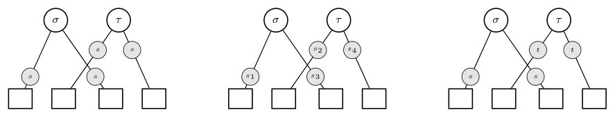
<figcaption class="paper-figure-caption"><b>Fig 1.</b> Figure 1: Where to attach the reference frame. Circles are sources, squares are parties, shaded discs are frame registers carrying a sign, and the two sources σ and τ each feed two parties, with their wires crossing so that grouping by source is visibly not grouping by position. In (a) a single register is shared by the whole experiment, which is the simulation of Ref. [3], and a causal structure with independent sources does not permit it. In (b) each wire carries its own register. That is permitted, but the sign patterns that survive the encoding then transpose single systems, and by Eq. (22) positivity fails. In (c) the register is attached to the source, so that wires from the same...</figcaption>
</figure>
</div>

<p><strong>Summary.</strong> This theoretical work explores the relationship between symmetries and the structure of quantum correlations. It demonstrates that by restricting the set of allowed effects, a quantum theory can appear indistinguishable from its symmetry-invariant subtheory, even when the symmetry itself is nonphysical. This highlights that the true boundary of quantum theory lies in the structure of its effects, not just its states.</p>
<p><strong>Why it may be interesting.</strong> It provides a deep, foundational understanding of what truly constitutes a 'quantum' theory versus a classical or restricted version, which impacts how we model physical constraints like causality.</p>
<details>
<summary>Detailed structure</summary>
<p><strong>Main problem.</strong> The paper investigates whether restricting the effects of a quantum theory can hide a nonphysical symmetry, leading to the coincidence of correlations between the theory and its symmetry-symmetrized subtheory.</p>
<p><strong>Main result.</strong> The authors show that for a constructed theory $T$ (by restricting effects), the symmetry can be carried undetectably, meaning $T$ and its symmetrized subtheory $sT$ share the same correlations in all causal structures.</p>
<p><strong>Method.</strong> The analysis compares the correlations of a general quantum theory $T$ with its symmetry-invariant subtheory $sT$, using concepts like sectorial closure and analyzing the gap between their respective correlation sets.</p>
<p><strong>Model / system.</strong> The study uses generalized probabilistic theories defined by states, effects, and operations, focusing on the comparison between the full theory and its real-amplitude (complex conjugation invariant) subtheory.</p>
<p><strong>Key observables.</strong> Correlations measured in various causal structures (e.g., bilocality scenario); the existence of a 'gap' between the correlations of $T$ and $sT$.</p>
<p><strong>Important parameters / regimes.</strong> The degree of restriction on effects (e.g., partial transpose conditions); the structure of the symmetry group acting on the system.</p>
<p><strong>Assumptions / limitations.</strong> The analysis relies on the concept of sectorial closure, which is shown to be sufficient for the absence of a gap under finite groups.</p>
<p><strong>Figures summary.</strong> Not specified in the notes; the notes focus on mathematical derivations and theoretical comparisons rather than figure descriptions.</p>
<p><strong>Paper structure.</strong> The paper develops the framework by defining the theory $T$ and its symmetry $sT$, proving that sectorial closure is key, and then constructing a specific theory $T$ whose effect restriction masks the symmetry, leading to the main conclusion.</p>
</details>
<details>
<summary>Abstract</summary>
<p>Real-amplitude quantum theory is the subtheory of quantum theory invariant under complex conjugation, and experiments in a network of independent sources have measured correlations above the real bound. A theory can nevertheless carry the same conjugation without complete positivity and still have exactly the correlations of its own conjugation-invariant subtheory in every causal structure, the bilocality scenario included. The states of that theory are all the density matrices, and its effects are the operators every partial transpose of which is again a quantum effect. Its symmetrized subtheory simulates it once each source carries a reference frame rather than each system. One map therefore receives three different verdicts in three theories, so the symmetry alone marks no boundary at all, and what sustains the separation in quantum theory is a property of quantum theory. Quantum theory admits every effect its states permit and this theory does not. What does have a boundary is the class of theories where the correlations of a theory and of its symmetrized subtheory coincide. We show that sectorial closure, meaning invariance of the effects and the operations under the symmetry acting independently on each source, suffices for the absence of a gap under any finite group, and that it cannot be weakened on the effects. Fixing unrestricted states and conjugation makes the effects of that theory the largest the symmetry admits, and its operations the largest sectorially closed ones. Locating where sectorial closure fails, for a candidate effect set built from a fixed bound entangled state, is a finite computation on a single ray of effects.</p>
</details>
<p><sub><a href="#top">↑ back to top</a></sub></p>

<p><a id="paper-2609.04341"></a></p>
<h3 id="schatten-norms-and-determinants-of-linear-combinations-of-matrix-tensor-powers-via-virtual-representations"><a href="http://arxiv.org/abs/2609.04341v1">Schatten norms and determinants of linear combinations of matrix tensor powers via virtual representations</a></h3>
<p><strong>Authors:</strong> Martin Áron Juhász, Mihály Weiner<br>
<strong>Type:</strong> theory · <strong>Category:</strong> other · <strong>PDF:</strong> <a href="https://arxiv.org/pdf/2609.04341v1">https://arxiv.org/pdf/2609.04341v1</a><br>
<strong>Analysis basis:</strong> full PDF text, analyzed in chunks
<strong>Topic relevance:</strong> <code>analog quantum simulation</code> <strong>2/5</strong></p>
<div class="figure-strip-hint">↔ Scroll figures horizontally</div>
<div class="paper-figures-scroll">
<figure class="paper-figure-card">
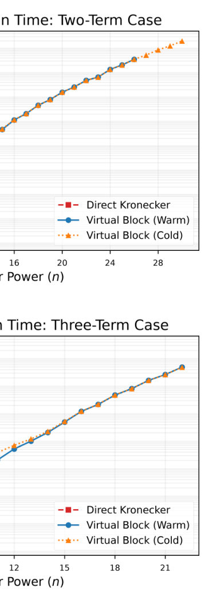
<figcaption class="paper-figure-caption"><b>Fig 1.</b> Figure 1: Single-thread CPU timings for the two-term (top) and three-term (bottom) trace- norm families. The ordinate is logarithmic. Warm timings reuse the calculator and cached representation data; cold timings start a fresh Python process. The direct method explicitly forms the Kronecker matrix and computes its dense SVD. The virtual-block method scales reliably up to n = 30. In the two-term case, after n = 26, warm benchmarking was skipped, since package loading overhead is constant in n. The three-term case was only performed until n = 22, as that was enough to show that the method is almost as fast for three-term, as for two-term, see Table 2</figcaption>
</figure>
</div>

<p><strong>Summary.</strong> This paper presents a novel, efficient mathematical technique to calculate the Schatten norms and determinants of sums of matrix tensor powers. By employing advanced representation theory, it transforms an exponentially complex problem into one solvable in polynomial time with respect to the power $n$. This breakthrough allows for the numerical analysis of complex quantum structures previously considered computationally intractable.</p>
<p><strong>Why it may be interesting.</strong> Although highly mathematical, the ability to efficiently compute high-order correlation functions or expectation values involving tensor products of operators (like those found in quantum information or many-body physics) by exploiting underlying symmetry structures is crucial for analyzing complex quantum systems.</p>
<details>
<summary>Detailed structure</summary>
<p><strong>Main problem.</strong> The paper addresses the computationally intractable problem of finding Schatten norms and determinants for linear combinations of high-order matrix tensor powers, $X_n = \sum t_i A_i^{\otimes n}$, as the power $n$ grows.</p>
<p><strong>Main result.</strong> The authors developed an exact representation-theoretic method that computes these quantities in polynomial time in $n$, bypassing the exponential storage requirements of the full tensor construction.</p>
<p><strong>Method.</strong> The method leverages Schur–Weyl duality and Jacobi–Trudi identities to decompose the problem into sums over symmetric powers (virtual representations), allowing for efficient, block-diagonal computation.</p>
<p><strong>Model / system.</strong> The mathematical model involves matrices $A_i \in M_d(\mathbb{C})$ and their tensor powers. While the problem has physical analogues in quantum hypothesis testing, the core focus is on the algebraic structure of these tensor combinations.</p>
<p><strong>Key observables.</strong> Schatten $p$-norm ($\|X_n\|_p$) and determinants of the linear combination $X_n$.</p>
<p><strong>Important parameters / regimes.</strong> Matrix dimension $d$, number of terms $s$, and the power $n$. The difficulty scales rapidly with $s \ge 3$.</p>
<p><strong>Assumptions / limitations.</strong> The method relies on the additivity of the Schatten $p$-functional, restricting its formal applicability to $0 < p < \infty$ (it does not cover the operator norm, $p=\infty$).</p>
<p><strong>Figures summary.</strong> Figure 1 compares the runtime of the direct Kronecker construction versus the virtual-block method for two- and three-term trace-norm calculations, showing the dramatic computational advantage of the virtual method as $n$ increases.</p>
<p><strong>Paper structure.</strong> The paper builds from establishing the computational bottleneck (exponential complexity) to introducing the representation-theoretic framework (Schur modules, Jacobi-Trudi identities), deriving master formulas for the norms/determinants, and finally benchmarking the resulting virtual-block algorithm against the direct construction.</p>
</details>
<details>
<summary>Abstract</summary>
<p>Let $$X_n=\sum_{i=1}^s t_i A_i^{\otimes n},$$ where $A_1,\ldots,A_s\in M_d(\mathbb C)$ and $t_1,\ldots,t_s\in\mathbb C$ are fixed, while $n$ grows. Direct computation of determinants or Schatten norms of $X_n$ is exponential in $n$. For a single tensor power these quantities are elementary, and even the determinant of a generic two-term combination admits a reduction to polynomially many scalar factors; however, no analogous elementary reduction is available for three or more terms.   We give an exact representation-theoretic method which, for fixed $d$ and $s$, computes $\|X_n\|_p$, $0<p<\infty$, and determinants in polynomial time in $n$. Schur--Weyl duality yields a simultaneous block decomposition, while Jacobi--Trudi identities in the Grothendieck ring replace Schur modules by signed combinations of tensor products of symmetric powers.   For $d=3$, each irreducible contribution reduces to the difference of two explicitly computable symmetric-power terms, leading to an open-source implementation. In a single-thread CPU benchmark, a genuine three-term $3\times3$ trace-norm problem with $n=18$ is evaluated in about $47$ seconds, whereas just storing the unreduced matrix would require approximately $2.4\times10^{18}$ bytes. Direct and reduced computations agree to relative error below $3.4\times10^{-15}$ throughout their common range $n\leq9$.</p>
</details>
<p><sub><a href="#top">↑ back to top</a></sub></p>

<p><a id="paper-2609.04387"></a></p>
<h3 id="toward-resilient-many-body-formulations-under-incomplete-correlation-models-a-dual-space-variational-formulation"><a href="http://arxiv.org/abs/2609.04387v1">Toward Resilient Many-Body Formulations under Incomplete Correlation Models: A Dual-Space Variational Formulation</a></h3>
<p><strong>Authors:</strong> Vibin Abraham, Bhumika Jayee, Bo Peng, Nicholas P. Bauman, Karol Kowalski<br>
<strong>Type:</strong> theory · <strong>Category:</strong> strongly correlated electrons · <strong>PDF:</strong> <a href="https://arxiv.org/pdf/2609.04387v1">https://arxiv.org/pdf/2609.04387v1</a><br>
<strong>Analysis basis:</strong> full PDF text, analyzed in chunks
<strong>Topic relevance:</strong> <code>Keldysh / 2PI / non-Gaussian methods</code> <strong>2/5</strong></p>
<div class="figure-strip-hint">↔ Scroll figures horizontally</div>
<div class="paper-figures-scroll">
<figure class="paper-figure-card">
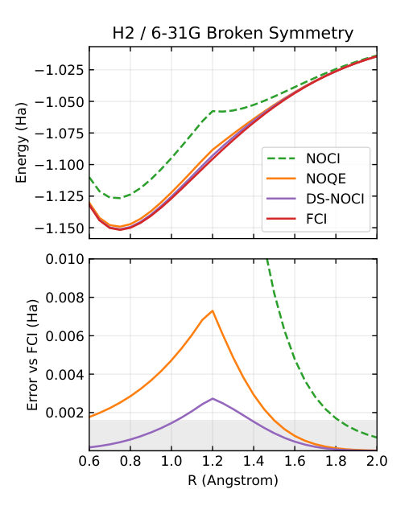
<figcaption class="paper-figure-caption"><b>Fig 1.</b> FIG. 1. H2/6-31G potential-energy surface obtained from two spin-complementary broken-symmetry UHF references. The upper panel shows total energies and the lower panel shows errors relative to FCI. Correlated companions are generated using unregularized UMP2 opposite-spin doubles amplitudes.</figcaption>
</figure>
<figure class="paper-figure-card">
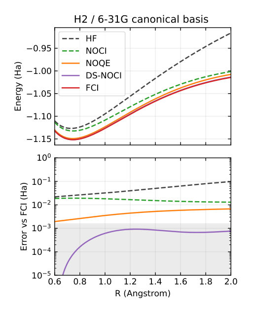
<figcaption class="paper-figure-caption"><b>Fig 2.</b> FIG. 2. H2/6-31G potential-energy surface in the canonical molecular-orbital representation using (1σg)2 and (1σu)2 as references. The upper panel shows total energies and the lower panel shows errors relative to FCI.</figcaption>
</figure>
<figure class="paper-figure-card">
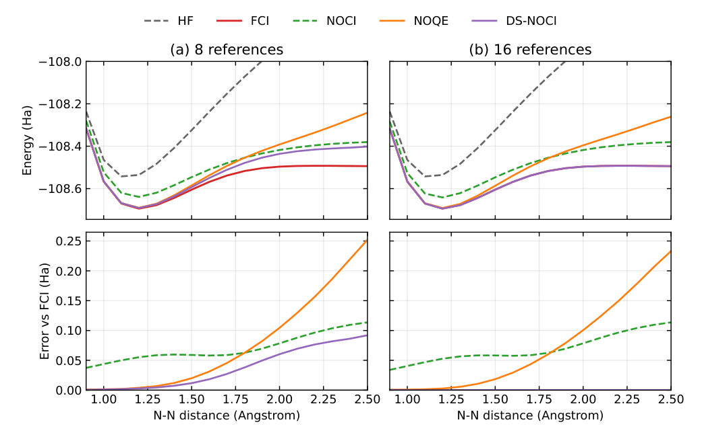
<figcaption class="paper-figure-caption"><b>Fig 3.</b> FIG. 3. N2/STO-6G potential-energy curves in a (6e, 6o) active space using (a) 8 and (b) 16 closed-shell seniority-zero references. The upper panels show the total energies and the lower panels show errors relative to FCI. Correlated companions are generated using doubles-only level-shifted MP2 amplitudes with δ = 0.2 Eh and no subsequent optimization. In panel (b), the DS-NOCI curve is indistinguishable from FCI: its error is below 10−7 Eh from R = 1.0 to 2.5 ˚A, and consequently lies on the horizontal axis in the lower panel.</figcaption>
</figure>
<figure class="paper-figure-card">
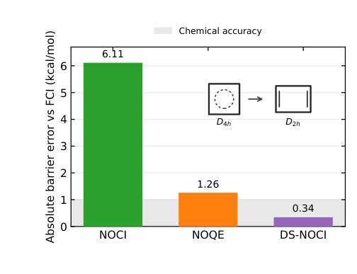
<figcaption class="paper-figure-caption"><b>Fig 4.</b> FIG. 4. Absolute cyclobutadiene automerization-barrier er- rors relative to CASCI/FCI(4e, 4o). Correlated companions use unregularized, reference-specific MP2-based amplitudes without subsequent optimization. The shaded region denotes chemical accuracy.</figcaption>
</figure>
<figure class="paper-figure-card">
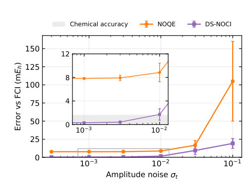
<figcaption class="paper-figure-caption"><b>Fig 5.</b> FIG. 5. Error relative to FCI for the correlated space only NOQE and DS-NOCI descriptions of linear H4/STO-3G at R = 2.0 bohr as a function of Gaussian perturbations to the MP2 doubles amplitudes. Markers denote the mean over 200 realizations and error bars indicate the standard deviation.</figcaption>
</figure>
</div>

<p><strong>Summary.</strong> This paper introduces the Dual-Space Nonorthogonal Configuration Interaction (DS-NOCI) framework to improve quantum simulations of strongly correlated systems. It addresses the critical issue of robustness by retaining a classical reference manifold alongside quantum-generated correlated states. This dual-space approach ensures that the calculated ground-state energy remains variationaly bounded by the best possible result from either component alone, making it resilient to model incompleteness and noise.</p>
<p><strong>Why it may be interesting.</strong> It provides a rigorous theoretical framework for building quantum algorithms for chemistry that explicitly accounts for and mitigates errors arising from both the underlying many-body theory (incomplete correlation models) and the quantum hardware itself.</p>
<details>
<summary>Detailed structure</summary>
<p><strong>Main problem.</strong> Developing quantum many-body formulations that remain robust and useful despite inherent imperfections, such as incomplete correlation models, approximate wave function ansätze, and hardware/statistical noise.</p>
<p><strong>Main result.</strong> The proposed Dual-Space Nonorthogonal Configuration Interaction (DS-NOCI) framework ensures that the calculated ground-state energy is no higher than the energy obtained from either the reference-only or correlated-only descriptions, preventing variational degradation.</p>
<p><strong>Method.</strong> The method constructs a variational space by explicitly retaining a classically accessible nonorthogonal reference manifold and coupling it variationally to a second manifold generated by correlated quantum states.</p>
<p><strong>Model / system.</strong> The study focuses on electronic structure calculations for correlated many-body systems, using molecular benchmarks like H2 dissociation to test the framework's resilience.</p>
<p><strong>Key observables.</strong> Ground-state energy ($E$), which is the primary variational observable.</p>
<p><strong>Important parameters / regimes.</strong> The degree of correlation (multireference character) and the level of noise/imperfection in the input model.</p>
<p><strong>Assumptions / limitations.</strong> The size consistency of the resulting energies is guaranteed assuming the basis functions are multiplicatively separable in the Noninteracting Subsystem Limit (NSL).</p>
<p><strong>Paper structure.</strong> The paper introduces the DS-NOCI framework by identifying the limitations of current methods when faced with imperfect information. It details the mathematical construction by coupling the reference and correlated sectors variationally, proves the energy bounding property, and validates the approach using molecular benchmarks.</p>
</details>
<details>
<summary>Abstract</summary>
<p>Quantum simulations of correlated many-body systems will inevitably operate with imperfect information: the prepared states may arise from incomplete or approximate ansatze, while their measured Hamiltonian and overlap matrix elements are additionally affected by hardware and statistical noise. Robust quantum algorithms will be those that can improve upon reliable lower-level descriptions in spite of these imperfections. We introduce a dual-space nonorthogonal configuration-interaction (DS-NOCI) framework built around this principle. Rather than replacing a classically accessible NOCI reference manifold with correlated quantum states, DS-NOCI retains both spaces and couples them variationally. The reference sector provides a stable many-body backbone, while the quantum states contribute whatever additional correlation directions they contain. With exact matrix elements, the enlarged dual space gives a ground-state energy no higher than either the reference-only NOCI or correlated-only quantum-NOCI spaces, ensuring that an incomplete correlation model cannot degrade the underlying variational description. The additional reference--correlated matrix elements require only one correlated state preparation and are therefore less demanding than the correlated--correlated block already required by quantum variant of NOCI. Molecular benchmarks further show enhanced resilience to imperfect amplitudes and noisy matrix elements. DS-NOCI thus provides a general strategy for building quantum many-body formulations that remain useful when both correlation models and quantum computations are necessarily incomplete and noisy.</p>
</details>
<p><sub><a href="#top">↑ back to top</a></sub></p>

<p><a id="paper-2609.05247"></a></p>
<h3 id="diffusion-under-competing-bulk-and-surface-stopping-mechanisms"><a href="http://arxiv.org/abs/2609.05247v1">Diffusion under competing bulk and surface stopping mechanisms</a></h3>
<p><strong>Authors:</strong> Yilin Ye<br>
<strong>Type:</strong> theory · <strong>Category:</strong> statistical mechanics · <strong>PDF:</strong> <a href="https://arxiv.org/pdf/2609.05247v1">https://arxiv.org/pdf/2609.05247v1</a><br>
<strong>Analysis basis:</strong> full PDF text, analyzed in chunks
<strong>Topic relevance:</strong> <code>Keldysh / 2PI / non-Gaussian methods</code> <strong>1/5</strong> · <code>correlated / nonlocal dissipation</code> <strong>1/5</strong> · <code>driven-dissipative phase transition</code> <strong>1/5</strong> · <code>methods for driven-dissipative</code> <strong>1/5</strong> · <code>non-equilibrium universality</code> <strong>1/5</strong> · <code>quantum measurements</code> <strong>1/5</strong></p>
<div class="figure-strip-hint">↔ Scroll figures horizontally</div>
<div class="paper-figures-scroll">
<figure class="paper-figure-card">
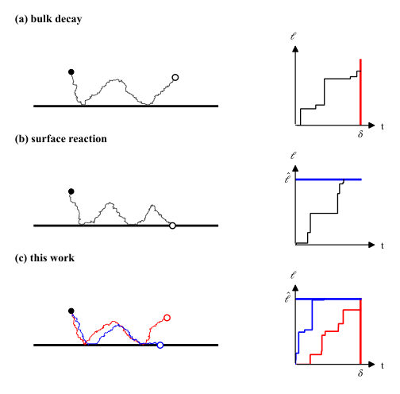
<figcaption class="paper-figure-caption"><b>Fig 1.</b> FIG. 1. Coarse schematic of the competing stopping mech- anisms. Two independent exponential clocks terminate the trajectory: the bulk lifetime δ ∼Exp(p) and surface reaction threshold ˆℓ∼Exp(q). (a) Pure bulk decay (p &gt; 0, q = 0): the trajectory ends at t = δ (vertical line in red). (b) Pure surface reaction (p = 0, q &gt; 0), the trajectory ends at ℓ= ˆℓ(horizon- tal line in blue). (c) Competing mechanisms (p &gt; 0, q &gt; 0): the trajectory may end at either threshold.</figcaption>
</figure>
<figure class="paper-figure-card">
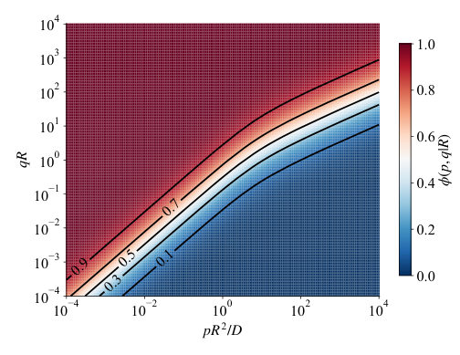
<figcaption class="paper-figure-caption"><b>Fig 2.</b> FIG. 2. Heat map of the splitting probability ϕ(p, q|R) for starting points on the reactive boundary of a three- dimensional ball (R = 1, D = 1) over the (pR2/D, qR) plane in log-log scale. Black curves indicate contour lines at ϕc = 0.1, 0.3, 0.5, 0.7, 0.9.</figcaption>
</figure>
<figure class="paper-figure-card">
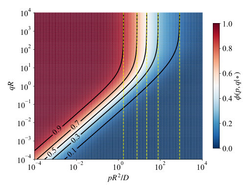
<figcaption class="paper-figure-caption"><b>Fig 3.</b> FIG. 3. Heat map of the splitting probability ϕ(p, q|◦) for uniformly distributed starting points in the three-dimensional ball (R = 1, D = 1) over the (pR2/D, qR) plane in log- log scale. Black curves indicate contour lines at ϕc = 0.1, 0.3, 0.5, 0.7, 0.9. Yellow dashed lines mark the corre- sponding crossover values pc solved from ϕc = ϕ∞(pc|◦) (Eq. (58)). Each (ϕc, pc) reads (0.1, 838.927), (0.3, 78.7298), (0.5, 22.4043), (0.7, 7.69806), and (0.9, 1.74768).</figcaption>
</figure>
<figure class="paper-figure-card">
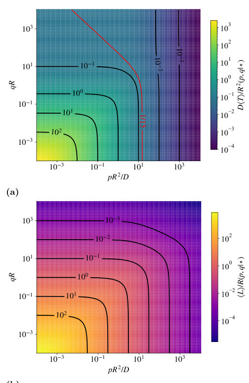
<figcaption class="paper-figure-caption"><b>Fig 4.</b> FIG. 4. Heat maps for uniformly distributed starting points in the ball (R = 1, D = 1) over the (pR2/D, qR) plane in log-log scale. (a) Mean stopping time ⟨T⟩(p, q|◦). Black curves indicate contour lines for ⟨T⟩(p, q|◦) = 10−3, 10−2, 10−1, 100, 101, 102, while the red line is the contour line for TD = R2/(15D) = 1/15. (b) Mean acquired boundary lo- cal time ⟨L⟩(p, q|◦). Black curves indicate contour lines for ⟨L⟩(p, q|◦) = 10−3, 10−2, 10−1, 100, 101, 102.</figcaption>
</figure>
<figure class="paper-figure-card">
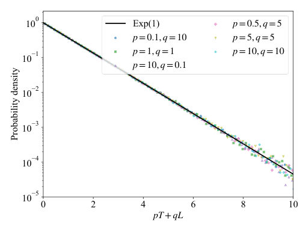
<figcaption class="paper-figure-caption"><b>Fig 5.</b> FIG. 5. Empirical probability densities of the cumulative risk RT = pT + qL obtained by Monte Carlo simulations for sev- eral (p, q) rate pairs (symbols), compared with the unit ex- ponential density (black line). For each (p, q) pair, starting points are uniformly distributed in the ball (R = 1, D = 1). Each dataset contains N = 106 independent trajectories gen- erated by the WoS-EFL algorithm with the boundary layer thickness ε = 10−3.</figcaption>
</figure>
</div>

<p><strong>Summary.</strong> This work analyzes diffusion in a bounded domain where the particle can stop due to either an internal bulk decay or a surface reaction. By treating these as competing exponential processes, the authors derive exact statistics for the stopping time and accumulated surface time. The most striking result is that the combined risk process follows a simple exponential distribution, providing a universal law for competing decay channels.</p>
<p><strong>Why it may be interesting.</strong> The universal exponential distribution of the total risk process is a powerful result applicable to various open quantum systems where multiple decay or loss channels compete.</p>
<details>
<summary>Detailed structure</summary>
<p><strong>Main problem.</strong> The paper investigates the joint statistics of two independent, competing stopping mechanisms acting on a diffusing particle in a bounded domain.</p>
<p><strong>Main result.</strong> The total cumulative risk process ($pT + qL$) is found to be exponentially distributed with a unit rate, and a key identity $p\langle T
angle + q\langle L
angle = 1$ is established.</p>
<p><strong>Method.</strong> The analysis uses advanced probabilistic methods, including the encounter-based approach and Laplace transforms, to derive moment generating functions and spectral representations.</p>
<p><strong>Model / system.</strong> The system models reflected diffusion (Brownian motion) in a bounded domain $\Omega$ subject to two independent stopping events: an exponential bulk decay (rate $p$) and a surface reaction triggered by exceeding an exponential local time threshold (rate $q$).</p>
<p><strong>Key observables.</strong> Stopping time ($T$), acquired boundary local time ($L$), splitting probability ($\phi$), and the total risk process ($pT + qL$).</p>
<p><strong>Important parameters / regimes.</strong> Bulk decay rate ($p$), surface reaction rate ($q$), and the geometry of the domain (e.g., radius $R$ for a 3D ball).</p>
<p><strong>Assumptions / limitations.</strong> The bulk decay time and the surface reaction threshold are assumed to be mutually independent exponential random variables.</p>
<p><strong>Figures summary.</strong> Figures illustrate heat maps showing the dependence of mean stopping time ($\langle T 
angle$), mean acquired local time ($\langle L 
angle$), and the correlation coefficient ($C$) on the rates $p$ and $q$ for a 3D ball.</p>
<p><strong>Paper structure.</strong> The paper progresses by deriving the marginal distributions and joint Laplace transform of $(T, L)$, establishing key identities like the sum rule, and finally analyzing specific geometries (like the 3D ball) to compute higher moments and correlation coefficients.</p>
</details>
<details>
<summary>Abstract</summary>
<p>We investigate reflected diffusion in a bounded domain subject to two independent, competing stopping mechanisms: an exponentially distributed bulk lifetime of rate $p$ and a surface reaction triggered when the boundary local time exceeds an independent exponential threshold of rate $q$. Denoting by $T$ the stopping time and by $L$ the acquired boundary local time at stopping, we derive their marginal distributions, joint Laplace transform, and complete hierarchy of mixed moments. These statistics are determined by the splitting probability $φ$ that surface reaction occurs before bulk decay. In particular, we establish the identity $p\expect{T}+q\expect{L}=1$ and show that the cumulative risk $pT+qL$ is exponentially distributed with unit rate. We further obtain equivalent representations of $φ$ in terms of the Robin-Laplacian and the generalized Steklov spectra. Explicit results for a three-dimensional ball reveal how competing rates $p,q$ control $φ$ and the $(T,L)$ statistics. Monte Carlo simulations test the universal cumulative-risk law.</p>
</details>
<p><sub><a href="#top">↑ back to top</a></sub></p>

<p><a id="paper-2609.04441"></a></p>
<h3 id="stability-of-collective-neutrino-oscillations-a-distributional-approach"><a href="http://arxiv.org/abs/2609.04441v1">Stability of Collective Neutrino Oscillations -- A Distributional Approach</a></h3>
<p><strong>Authors:</strong> Rupak Majumder, Dwaipayan Mukherjee, Shamik Gupta, Basudeb Dasgupta<br>
<strong>Type:</strong> theory · <strong>Category:</strong> statistical mechanics · <strong>PDF:</strong> <a href="https://arxiv.org/pdf/2609.04441v1">https://arxiv.org/pdf/2609.04441v1</a><br>
<strong>Analysis basis:</strong> full PDF text, analyzed in chunks
<strong>Topic relevance:</strong> <code>Keldysh / 2PI / non-Gaussian methods</code> <strong>1/5</strong> · <code>correlated / nonlocal dissipation</code> <strong>1/5</strong> · <code>driven-dissipative phase transition</code> <strong>1/5</strong> · <code>methods for driven-dissipative</code> <strong>1/5</strong> · <code>non-equilibrium universality</code> <strong>1/5</strong></p>
<div class="figure-strip-hint">↔ Scroll figures horizontally</div>
<div class="paper-figures-scroll">
<figure class="paper-figure-card">
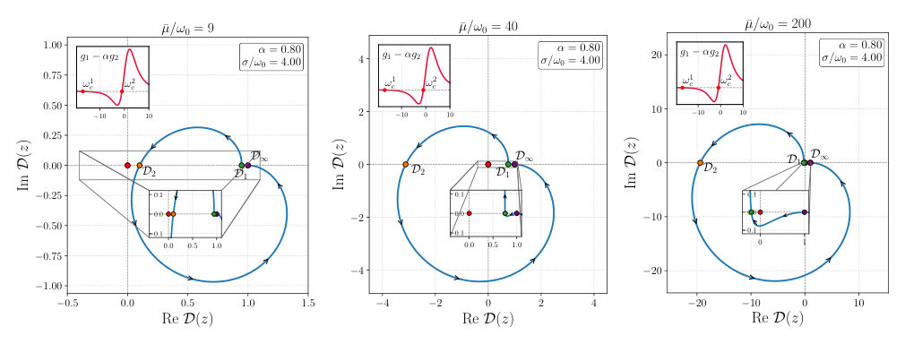
<figcaption class="paper-figure-caption"><b>Fig 1.</b> Figure 1. Contours of the dispersion relation D(z) for the crossing criterion for the effective two-Lorentzian spectrum g1(ω) −αg2(ω) shown in the top-left inset. The panels show the contours below, inside, and above the unstable interval. The center insets show a zoomed-in region near the origin, with the contours not encircling, encircling, and not encircling the origin, respectively.</figcaption>
</figure>
<figure class="paper-figure-card">
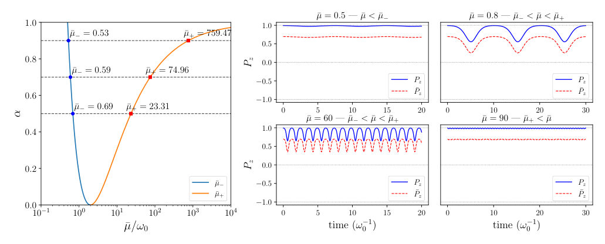
<figcaption class="paper-figure-caption"><b>Fig 2.</b> Figure 2. Phase diagram and time evolution for the two thick-beam model. Left panel: The analytically predicted phase diagram in the ¯µ/ω0 −α plane, showing the stable and unstable bipolar regions separated by the boundaries ¯µ± given in Eq. (24). The horizontal dashed lines mark three representative asymmetry values, α = 0.9, 0.7, 0.5, with the corresponding critical points indicated. Right panels: Time evolution of Pz and ¯Pz for α = 0.7 as the neutrino self-interaction strength ¯µ is varied. For ¯µ &lt; ¯µ−and ¯µ &gt; ¯µ+, the Pz and ¯Pz remain close to their initial values. Within ¯µ−&lt; ¯µ &lt; ¯µ+, they develop bipolar oscillations, with small dips near the lower boundary and large-amplitude...</figcaption>
</figure>
<figure class="paper-figure-card">
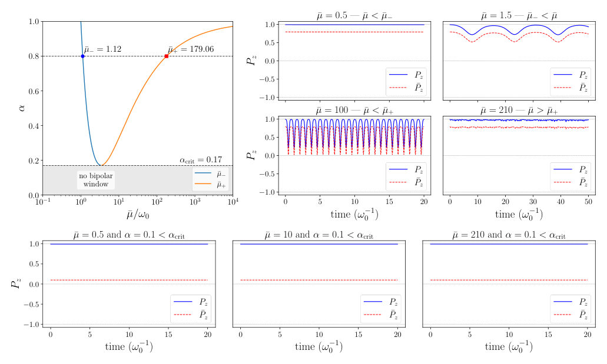
<figcaption class="paper-figure-caption"><b>Fig 3.</b> Figure 3. Phase diagram and time evolution for the two-Lorentzian model. The top-left panel shows the analytical instability boundaries in the ¯µ/ω0 −α plane, obtained for the two-Lorentzian spectrum given in Eq. (29). The upper-right panels show the time evolution of Pz and ¯Pz for α = 0.8, and ¯µ is varied across the stable and unstable regimes. The lower panels show the evolution for α = 0.1 in the no-bipolar-window (shaded in gray); no instability appears even as ¯µ is varied across a large range.</figcaption>
</figure>
<figure class="paper-figure-card">
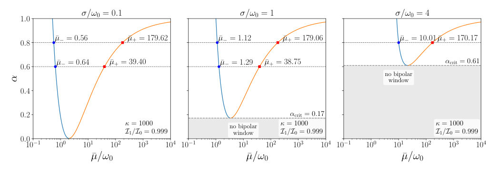
<figcaption class="paper-figure-caption"><b>Fig 4.</b> Figure 4. Phase diagrams for the north-south cohort with two-Lorentzian distributions centered at ±ω0. Here κ and I1(κ)/I0(κ) are fixed for all the panels, while the Lorentzian width is varied across the panels: σ/ω0 = 0.1, 1, 4. As the width of the frequency distribution increases, the bipolar window narrows. For sufficiently broad widths, the no-bipolar-window becomes significantly large in the phase space, and no bipolar instability is predicted.</figcaption>
</figure>
<figure class="paper-figure-card">
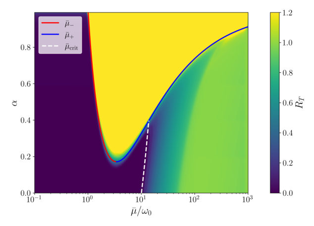
<figcaption class="paper-figure-caption"><b>Fig 5.</b> Figure 5. Combined phase diagram in the ¯µ/ω0 −α plane for the two-Lorentzian spectrum. The red and blue solid curves denote the analytical instability boundaries ¯µ−and ¯µ+, respectively, while the white dashed curve shows the synchronization threshold ¯µcrit, continued into the instability region for numerical comparison. Dark regions correspond to RT ≃0, while nonzero values indicate collective transverse motion. The color scale is clipped at RT = 1.2 for visual clarity. In the simulations we use ω0 = 1, σ/ω0 = 1, δ = 2θmix = 0.1 rad, and κ = 1000, with 1.5 × 104 frequency modes per cohort and a total of 4 × 105 sampled points in the ¯µ/ω0 −α plane.</figcaption>
</figure>
</div>

<p><strong>Summary.</strong> This work analyzes the stability of collective neutrino oscillations using a sophisticated distributional approach rooted in statistical mechanics. By deriving and analyzing a nonlinear Fokker-Planck equation, the authors establish a stability criterion that is valid for any initial state, not just those near full coherence. This provides a significant theoretical advancement for understanding flavor dynamics in extreme astrophysical environments.</p>
<p><strong>Why it may be interesting.</strong> The use of a distributional approach and connection to synchronization phenomena (Kuramoto model) provides a powerful, non-standard tool for analyzing non-equilibrium many-body dynamics, relevant to open quantum systems.</p>
<details>
<summary>Detailed structure</summary>
<p><strong>Main problem.</strong> The paper investigates the stability of collective neutrino oscillations, treating the system in the thermodynamic limit to derive a generalized stability criterion.</p>
<p><strong>Main result.</strong> A distributional approach yields an eigenvalue condition that determines stability for any initial distribution, significantly extending beyond conventional linear stability analyses.</p>
<p><strong>Method.</strong> The authors derive and analyze a nonlinear Fokker-Planck equation for the one-body distribution, linearizing it around stationary solutions to find the growth/decay rate of perturbations.</p>
<p><strong>Model / system.</strong> The system models neutrino flavor oscillations in a dense environment, governed by the evolution of the one-body distribution function F(S, omega, t) on the flavor sphere S^2.</p>
<p><strong>Key observables.</strong> The order parameter (P), the complex frequency of perturbations (Omega), and the stability phase diagrams.</p>
<p><strong>Important parameters / regimes.</strong> Concentration parameter (kappa), asymmetry parameter (alpha), and the interaction strength (mu).</p>
<p><strong>Assumptions / limitations.</strong> The analysis uses the single-angle approximation and linearizes the evolution equation around specific stationary states.</p>
<p><strong>Paper structure.</strong> The paper establishes the nonlinear Fokker-Planck equation, derives the stationary solutions (like the 'north-south' family), and then analyzes the stability by linearizing the equation and solving the resulting eigenvalue condition.</p>
</details>
<details>
<summary>Abstract</summary>
<p>We study the stability of collective neutrino oscillations using a distributional approach motivated by the statistical mechanics of Kuramoto synchronization. Treating the ensemble of neutrino flavor polarization vectors in the thermodynamic limit $N\to\infty$, we derive an exact nonlinear Fokker--Planck (continuity) equation for the one-body distribution $F(\vec{\mathbf{S}},ω,t)$ on the flavor sphere. This equation admits a two-parameter family of azimuthally symmetric stationary solutions, whose stability we analyze by linearizing around them. The resulting eigenvalue condition determines the growth or decay rate of small perturbations from \emph{any} initial distribution -- not merely from a state close to full flavor coherence -- thereby going significantly beyond the conventional linear stability analysis of collective modes. In special limits the condition reproduces known synchronization thresholds in the two-beam model, providing a non-trivial check of the framework. We present analytical results for the eigenvalue equation and explore stability phase diagrams for physically relevant frequency distributions.</p>
</details>
<p><sub><a href="#top">↑ back to top</a></sub></p>

<p><a id="paper-2609.04408"></a></p>
<h3 id="thermal-lifetime-of-the-centralized-repetition-code-from-quantum-annealing-to-social-dynamics"><a href="http://arxiv.org/abs/2609.04408v1">Thermal lifetime of the centralized repetition code: From quantum annealing to social dynamics</a></h3>
<p><strong>Authors:</strong> Ari Mizel, Van Molino<br>
<strong>Type:</strong> theory · <strong>Category:</strong> quantum information and computing · <strong>PDF:</strong> <a href="https://arxiv.org/pdf/2609.04408v1">https://arxiv.org/pdf/2609.04408v1</a><br>
<strong>Analysis basis:</strong> full PDF text, analyzed in chunks
<strong>Topic relevance:</strong> <code>Keldysh / 2PI / non-Gaussian methods</code> <strong>1/5</strong> · <code>correlated / nonlocal dissipation</code> <strong>1/5</strong> · <code>driven-dissipative phase transition</code> <strong>1/5</strong> · <code>methods for driven-dissipative</code> <strong>1/5</strong> · <code>non-equilibrium universality</code> <strong>1/5</strong></p>
<div class="figure-strip-hint">↔ Scroll figures horizontally</div>
<div class="paper-figures-scroll">
<figure class="paper-figure-card">

<figcaption class="paper-figure-caption"><b>Fig 1.</b> FIG. 1. Depiction of the centralized repetition code in which each circle represents a qubit. The spokes represent interac- tions between the central qubit (hub) and each of the periph- eral qubits. The case of n = 13 qubits is shown.</figcaption>
</figure>
<figure class="paper-figure-card">
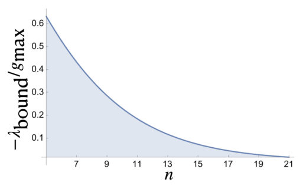
<figcaption class="paper-figure-caption"><b>Fig 2.</b> FIG. 2. Plot of bound (16) on λ1 as a function of n for the particular choice βJ = 0.8. As n increases to ∞, the code becomes increasingly stable despite the fact that the temperature kBT exceeds J.</figcaption>
</figure>
</div>

<p><strong>Summary.</strong> This paper analyzes the thermal stability of the centralized repetition code, a quantum error-correcting code, by modeling its interaction with a thermal bath. Using the Lindblad master equation and spectral analysis, the authors prove that the star-graph configuration imparts significant thermal stability. This stability allows for the robust storage of quantum information, demonstrating a key mechanism for fault-tolerant quantum computation.</p>
<p><strong>Why it may be interesting.</strong> This work directly addresses the fundamental challenge of noise in quantum computation by analyzing the thermal robustness of a specific quantum error-correcting code structure.</p>
<details>
<summary>Detailed structure</summary>
<p><strong>Main problem.</strong> The paper investigates the thermal stability and lifetime of the centralized repetition code when subjected to environmental noise.</p>
<p><strong>Main result.</strong> The centralized configuration demonstrates thermal stability, allowing for the robust storage of a logical bit, with the storage lifetime scaling exponentially with the system size $n$.</p>
<p><strong>Method.</strong> The analysis employs the Lindblad master equation framework, utilizing spectral analysis and a variational argument to bound the relaxation rate (second eigenvalue).</p>
<p><strong>Model / system.</strong> The system is the centralized repetition code, modeled as a star-graph structure with a central hub qubit connected by ferromagnetic Ising interactions to peripheral qubits. The evolution is governed by a master equation derived from the total Hamiltonian.</p>
<p><strong>Key observables.</strong> Thermal lifetime ($    au \sim 1/|\lambda_1|$), which determines the rate of information decay.</p>
<p><strong>Important parameters / regimes.</strong> Coupling strength ($J$), inverse temperature ($eta = 1/k_B T$), and system size ($n$).</p>
<p><strong>Assumptions / limitations.</strong> The analysis relies on Born-Markov assumptions for the bath interaction and uses a variational approach to bound the relaxation rate.</p>
<p><strong>Figures summary.</strong> Figure 1 illustrates the structure of the centralized repetition code for $n=13$. Figure 2 plots the bound on the second eigenvalue ($\lambda_1$) versus $n$, showing it approaches zero as $n$ increases.</p>
<p><strong>Paper structure.</strong> The paper first establishes the physical model and the master equation. It then uses spectral analysis and variational methods to derive an upper bound on the relaxation rate, demonstrating the exponential scaling of the lifetime with $n$. Finally, it compares this stability to simpler codes like the 1D chain.</p>
</details>
<details>
<summary>Abstract</summary>
<p>There is an extensive body of research probing the potential of adiabatic quantum computation and quantum annealing to solve hard computational problems. This research endeavor is complicated by noise afflicting hardware during the computational process. An error-correcting approach called quantum annealing correction (QAC) was suggested to mitigate this noise. The QAC approach employs a centralized version of the repetition code in which the qubits are configured in a star-graph pattern with one special qubit playing the role of the hub. In this paper, we explore the thermal physics of the centralized repetition code, using a Lindblad equation framework to analyze its lifetime when coupled to a thermal bath. We show that its centralized configuration leads to thermal stability, enabling the robust storage of a logical bit of information, despite the fact that there is only 1 ferromagnetic Ising interaction per qubit like a 1-dimensional Ising chain.</p>
</details>
<p><sub><a href="#top">↑ back to top</a></sub></p>

<p><a id="paper-2609.05276"></a></p>
<h3 id="connecting-heterogeneous-dynamics-with-local-entropy"><a href="http://arxiv.org/abs/2609.05276v1">Connecting heterogeneous dynamics with local entropy</a></h3>
<p><strong>Authors:</strong> Jun Wu, Walter Kob, Yujie Wang, Zhen Zhang<br>
<strong>Type:</strong> theory · <strong>Category:</strong> disordered systems and neural networks · <strong>PDF:</strong> <a href="https://arxiv.org/pdf/2609.05276v1">https://arxiv.org/pdf/2609.05276v1</a><br>
<strong>Analysis basis:</strong> full PDF text, analyzed in chunks
<strong>Topic relevance:</strong> <code>analog quantum simulation</code> <strong>1/5</strong> · <code>non-equilibrium universality</code> <strong>1/5</strong> · <code>scars &amp; prethermalization</code> <strong>1/5</strong></p>
<div class="figure-strip-hint">↔ Scroll figures horizontally</div>
<div class="paper-figures-scroll">
<figure class="paper-figure-card">
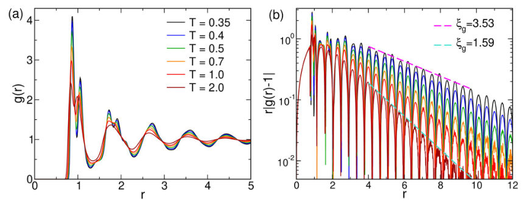
<figcaption class="paper-figure-caption"><b>Fig 1.</b> FIG. 1. (a) Radial distribution function g(r) at various temperatures. (b) r|g(r) −1|. The dashed</figcaption>
</figure>
<figure class="paper-figure-card">

<figcaption class="paper-figure-caption"><b>Fig 2.</b> Fig. 2b, the temperature dependence of D deviates from Arrhenius behavior upon cooling.</figcaption>
</figure>
<figure class="paper-figure-card">
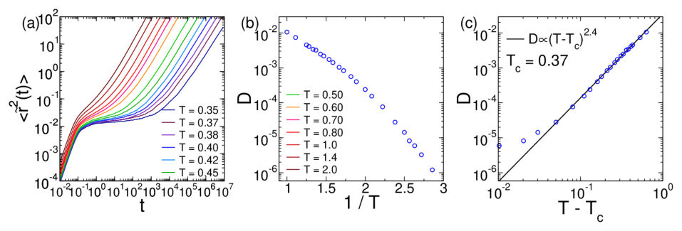
<figcaption class="paper-figure-caption"><b>Fig 3.</b> FIG. 2. (a) Cage-relative mean squared displacement as a function of time. (b) Self diffusion</figcaption>
</figure>
<figure class="paper-figure-card">
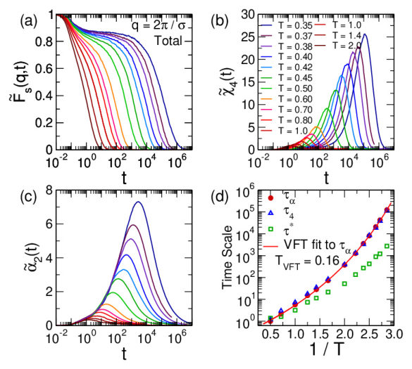
<figcaption class="paper-figure-caption"><b>Fig 4.</b> FIG. 3. (a) Cage-relative self intermediate scattering function, defined in Eq. (13). (b) Dynamical</figcaption>
</figure>
<figure class="paper-figure-card">
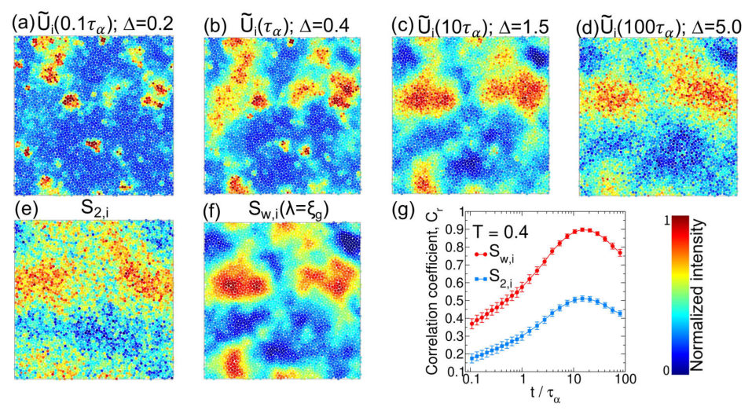
<figcaption class="paper-figure-caption"><b>Fig 5.</b> FIG. 4. Structure–dynamics correlation at T = 0.4. (a-d) Normalized dynamical propensity</figcaption>
</figure>
</div>

<p><strong>Summary.</strong> This work proposes a weighted pair-entropy descriptor to bridge the gap between static structure and dynamic behavior in glass formers. By incorporating a physically motivated length scale into the entropy calculation, the authors significantly improve the descriptor's ability to predict particle dynamics. This provides a general, interpretable framework for studying structure-dynamics correlations in disordered systems.</p>
<p><strong>Why it may be interesting.</strong> While focused on classical glass physics, the methodology of using structural descriptors (like entropy) to predict complex, non-equilibrium dynamics is highly relevant to understanding energy landscapes and relaxation in quantum many-body systems.</p>
<details>
<summary>Detailed structure</summary>
<p><strong>Main problem.</strong> The central challenge is establishing a physically interpretable link between the static structure and the heterogeneous relaxation dynamics in glass-forming systems.</p>
<p><strong>Main result.</strong> A novel weighted pair-entropy descriptor significantly enhances the predictive power of structure-based metrics, achieving a high correlation (up to 0.9) with particle-level dynamics.</p>
<p><strong>Method.</strong> The authors introduce a weighted pair-entropy descriptor by multiplying the standard excess entropy integrand with a weight function related to the pair correlation function's length scale.</p>
<p><strong>Model / system.</strong> The study uses a canonical two-dimensional Lennard-Jones glass former, simulating its structural and dynamic properties across various temperatures.</p>
<p><strong>Key observables.</strong> Weighted pair-entropy descriptor ($S_{w,i}$), particle-level dynamical propensity (DP), structure-dynamics correlation coefficient ($C_r$), and structural/dynamic correlation functions.</p>
<p><strong>Important parameters / regimes.</strong> Temperature (cooling from $T=4.0$ down to $0.35 \le T \le 2.0$), structural length scale ($\lambda$), and the $\alpha$-relaxation time ($   au_\alpha$).</p>
<p><strong>Assumptions / limitations.</strong> The method assumes that incorporating a physically motivated structural length scale into entropy descriptors improves predictive power while maintaining physical interpretability.</p>
<p><strong>Figures summary.</strong> Figures illustrate the radial distribution function $g(r)$, the correlation between the weighted entropy and dynamical propensity, and the evolution of dynamic heterogeneity measures like $ ilde{\alpha}_2(t)$ with temperature.</p>
<p><strong>Paper structure.</strong> The paper develops the weighted entropy descriptor, applies it to molecular dynamics simulations of a 2D glass former, and quantitatively compares its correlation with particle dynamics against conventional entropy measures.</p>
</details>
<details>
<summary>Abstract</summary>
<p>Establishing a robust and physically interpretable link between static structure and heterogeneous relaxation dynamics remains a fundamental challenge in glass physics. Here, we introduce a weighted pair-entropy descriptor based on the conventional two-body excess entropy. For this, we multiply the integrand used to calculate the excess entropy by a weight function that is directly related to the length scale of the pair correlation function. This multiplication does not affect the contribution of the short range order to the local excess entropy, but allows to take into account the structure present on intermediate distances, i.e., the medium-range order. For a canonical two-dimensional Lennard-Jones glass former, the resulting descriptor exhibits a strong correlation with particle-level dynamical propensity at long times (multiples of the alpha-relaxation time), with a maximum structure--dynamics correlation reaching about 0.9, substantially outperforming the predictive power of the conventional local pair excess entropy. These results demonstrate that incorporating a physically motivated structural length scale into entropy-based descriptors markedly enhances their predictive power while preserving physical interpretability. Our findings provide a simple and general framework for investigating structure--dynamics correlations in glass-forming systems.</p>
</details>
<p><sub><a href="#top">↑ back to top</a></sub></p>

<p><a id="paper-2609.04985"></a></p>
<h3 id="from-the-light-quantum-to-the-photon-the-evolution-of-a-physical-concept"><a href="http://arxiv.org/abs/2609.04985v1">From the Light Quantum to the Photon: The Evolution of a Physical Concept</a></h3>
<p><strong>Authors:</strong> Aaron Collavini, Valentina Bologna, Francesco Longo, Stefano Ansoldi, Fulvio Parmigiani<br>
<strong>Type:</strong> theory · <strong>Category:</strong> other · <strong>PDF:</strong> <a href="https://arxiv.org/pdf/2609.04985v1">https://arxiv.org/pdf/2609.04985v1</a><br>
<strong>Analysis basis:</strong> full PDF text, analyzed in chunks
<strong>Topic relevance:</strong> <code>correlated / nonlocal dissipation</code> <strong>1/5</strong> · <code>quantum measurements</code> <strong>1/5</strong></p>
<div class="figure-strip-hint">↔ Scroll figures horizontally</div>
<div class="paper-figures-scroll">
<figure class="paper-figure-card">
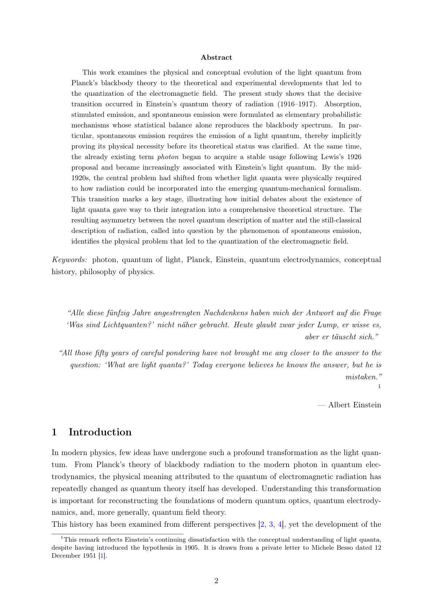
<figcaption class="paper-figure-caption"><b>Fig 1.</b> Low-resolution page preview, page 2</figcaption>
</figure>
<figure class="paper-figure-card">
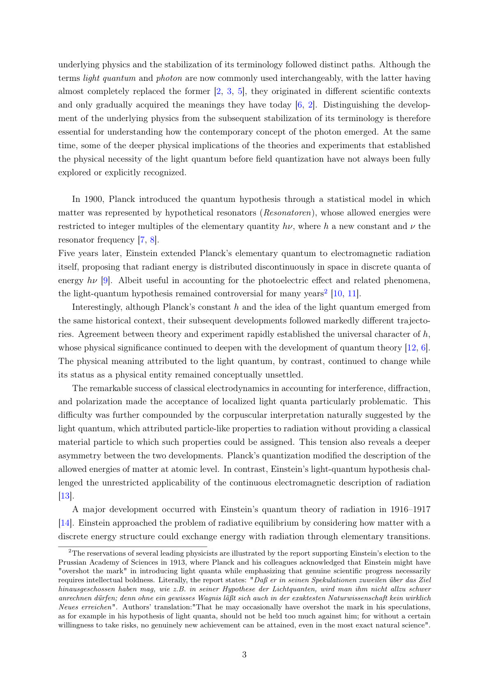
<figcaption class="paper-figure-caption"><b>Fig 2.</b> Low-resolution page preview, page 3</figcaption>
</figure>
<figure class="paper-figure-card">
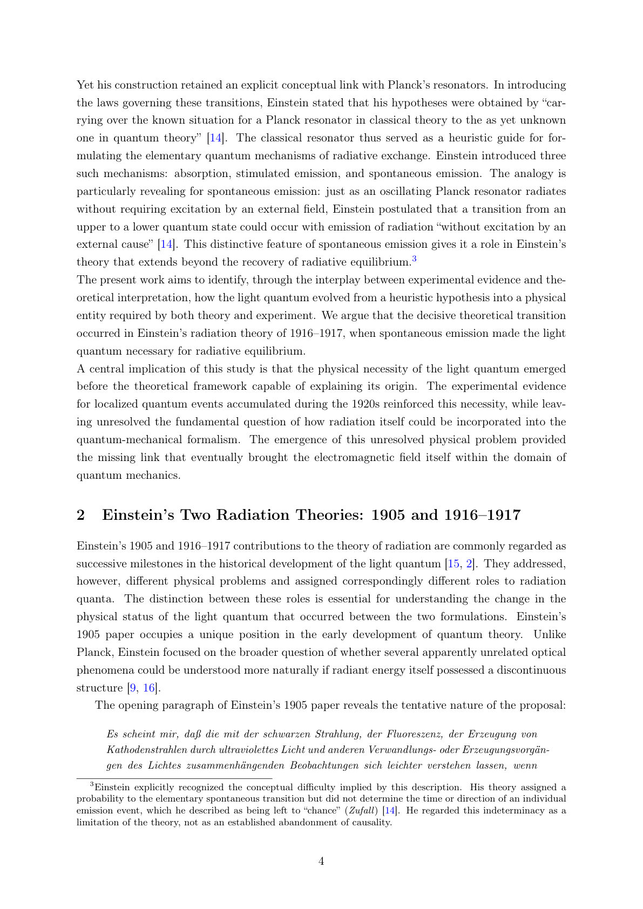
<figcaption class="paper-figure-caption"><b>Fig 3.</b> Low-resolution page preview, page 4</figcaption>
</figure>
<figure class="paper-figure-card">
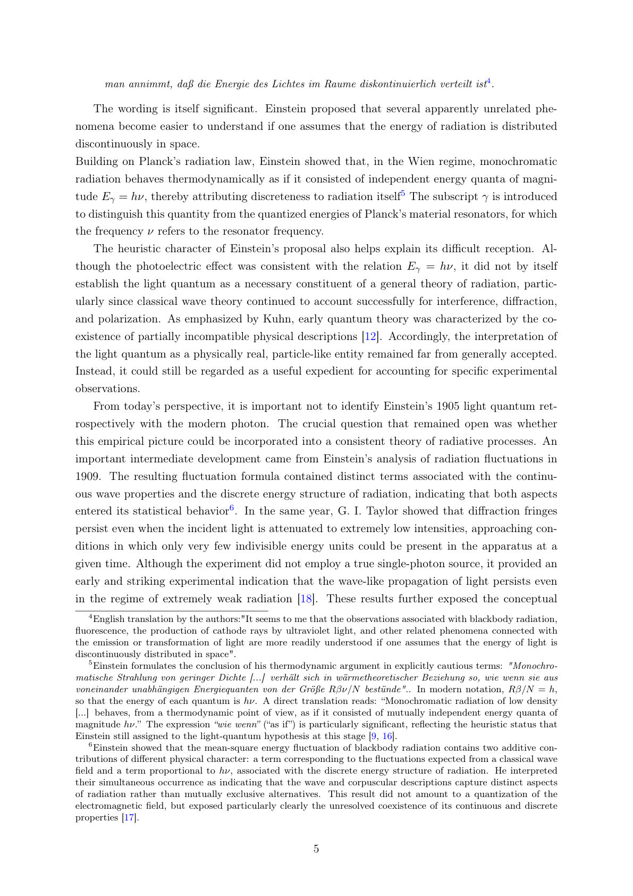
<figcaption class="paper-figure-caption"><b>Fig 4.</b> Low-resolution page preview, page 5</figcaption>
</figure>
<figure class="paper-figure-card">
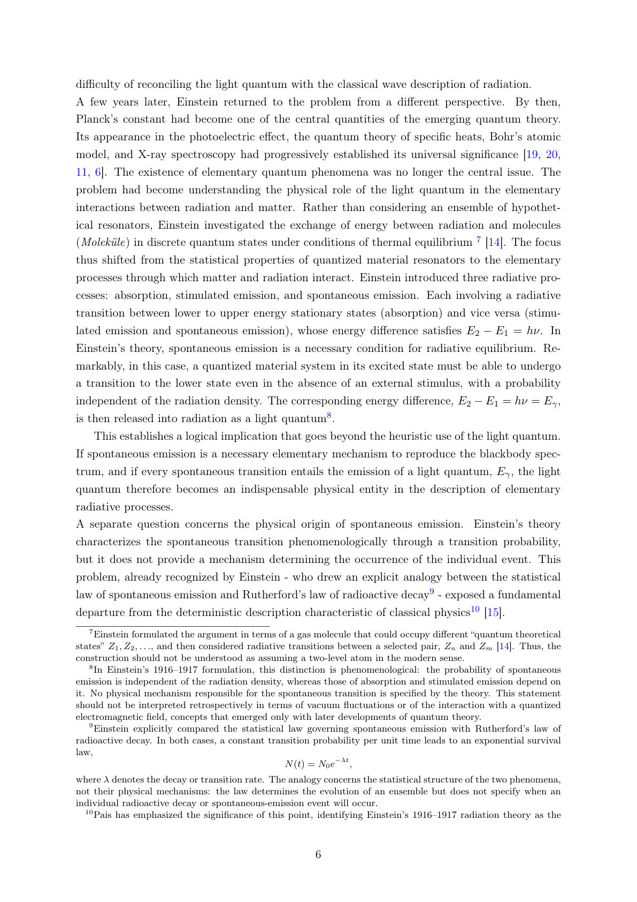
<figcaption class="paper-figure-caption"><b>Fig 5.</b> Low-resolution page preview, page 6</figcaption>
</figure>
</div>

<p><strong>Summary.</strong> This paper provides a historical account of how the concept of the light quantum evolved from Planck's initial ideas to its modern understanding as the photon. It argues that the physical necessity of the quantum nature of light was first revealed through the analysis of spontaneous emission. Ultimately, it charts the crucial theoretical shift required to incorporate radiation into a consistent quantum mechanical formalism.</p>
<p><strong>Why it may be interesting.</strong> This paper is foundational for understanding quantum optics and open quantum systems, as it details the historical necessity of treating the electromagnetic field quantum mechanically to explain processes like spontaneous emission.</p>
<details>
<summary>Detailed structure</summary>
<p><strong>Main problem.</strong> The paper traces the conceptual and physical evolution of the light quantum, from Planck's initial blackbody theory to its eventual incorporation into a full quantum description of the electromagnetic field.</p>
<p><strong>Main result.</strong> The physical necessity of the light quantum was established by analyzing spontaneous emission, which required the emission of a discrete quantum, preceding the full theoretical framework for quantizing the EM field.</p>
<p><strong>Method.</strong> The work employs a historical analysis, comparing theoretical developments from Planck, Einstein, and subsequent quantum theorists to track the conceptual shifts.</p>
<p><strong>Model / system.</strong> The primary systems analyzed are blackbody radiation, the interaction of light with matter (photoelectric effect, spontaneous emission), and the theoretical transition from classical wave descriptions to quantum field theory.</p>
<p><strong>Key observables.</strong> Blackbody spectrum, energy quanta ($E=h
u$), and the rates/probabilities of radiative transitions (absorption, stimulated, spontaneous emission).</p>
<p><strong>Important parameters / regimes.</strong> Planck's constant (h), frequency ($
u$), and the energy levels of matter systems.</p>
<p><strong>Assumptions / limitations.</strong> The analysis highlights the tension between the classical continuous description of the EM field and the discrete quantum nature implied by radiative processes.</p>
<p><strong>Paper structure.</strong> The paper follows a historical progression: starting with Planck's work, moving to Einstein's crucial 1916-1917 theory based on spontaneous emission, and concluding with the conceptual challenges of unifying matter and radiation quantization.</p>
</details>
<details>
<summary>Abstract</summary>
<p>This work examines the physical and conceptual evolution of the light quantum from Planck's blackbody theory to the theoretical and experimental developments that led to the quantization of the electromagnetic field. The present study shows that the decisive transition occurred in Einstein's quantum theory of radiation (1916-1917). Absorption, stimulated emission, and spontaneous emission were formulated as elementary probabilistic mechanisms whose statistical balance alone reproduces the blackbody spectrum. In particular, spontaneous emission requires the emission of a light quantum, thereby implicitly proving its physical necessity before its theoretical status was clarified. At the same time, the already existing term photon began to acquire a stable usage following Lewis's 1926 proposal and became increasingly associated with Einstein's light quantum. By the mid-1920s, the central problem had shifted from whether light quanta were physically required to how radiation could be incorporated into the emerging quantum-mechanical formalism. This transition marks a key stage, illustrating how initial debates about the existence of light quanta gave way to their integration into a comprehensive theoretical structure. The resulting asymmetry between the novel quantum description of matter and the still-classical description of radiation, called into question by the phenomenon of spontaneous emission, identifies the physical problem that led to the quantization of the electromagnetic field.</p>
</details>
<p><sub><a href="#top">↑ back to top</a></sub></p>

<p><a id="paper-2609.04558"></a></p>
<h3 id="structural-tuning-of-reduced-exciton-mass-in-layered-hoip-compounds-causation-vs-correlation"><a href="http://arxiv.org/abs/2609.04558v1">Structural tuning of reduced exciton mass in layered HOIP compounds: Causation vs. correlation</a></h3>
<p><strong>Authors:</strong> Isaac R. Burkholder, Cindy Y. Wong, André Schleife, Kameron R. Hansen, John S. Colton, Branton J. Campbell<br>
<strong>Type:</strong> theory · <strong>Category:</strong> strongly correlated electrons · <strong>PDF:</strong> <a href="https://arxiv.org/pdf/2609.04558v1">https://arxiv.org/pdf/2609.04558v1</a><br>
<strong>Analysis basis:</strong> full PDF text, analyzed in chunks
<strong>Topic relevance:</strong> <code>Keldysh / 2PI / non-Gaussian methods</code> <strong>1/5</strong> · <code>analog quantum simulation</code> <strong>1/5</strong></p>
<div class="figure-strip-hint">↔ Scroll figures horizontally</div>
<div class="paper-figures-scroll">
<figure class="paper-figure-card">
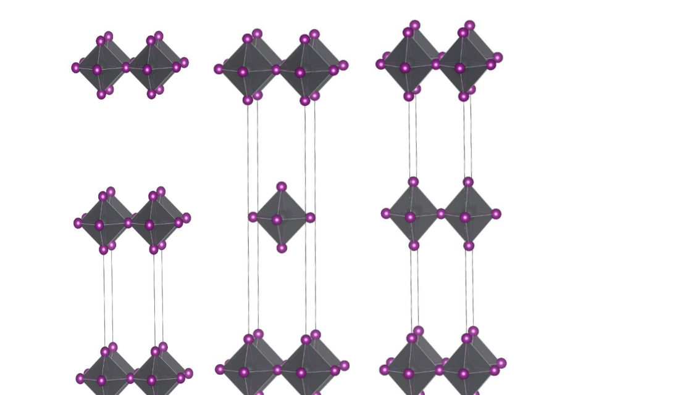
<figcaption class="paper-figure-caption"><b>Fig 1.</b> Figure 1. Examples of topological parent structures for n=1 2D HOIPs. From left to right: Dion-Jacobson (DJ, P4/mmm, #123), Ruddlesden-Popper (RP, I4/mmm, #139), and Half- Zero (H0, Cmmm, #65), with boxes indicating the conventional unit cell. All structures in this study were analyzed using the DJ topological parent structure.</figcaption>
</figure>
<figure class="paper-figure-card">
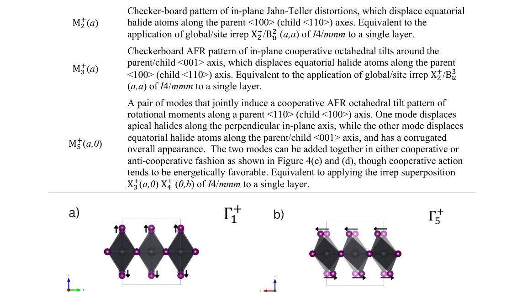
<figcaption class="paper-figure-caption"><b>Fig 2.</b> Figure 2. Graphical representation of the (a) 𝛤1</figcaption>
</figure>
<figure class="paper-figure-card">
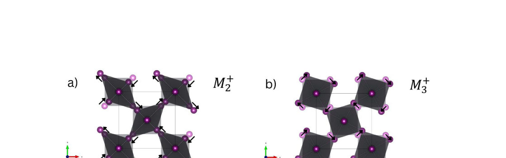
<figcaption class="paper-figure-caption"><b>Fig 3.</b> Figure 3. Graphical representation of the (a) 𝑀2</figcaption>
</figure>
<figure class="paper-figure-card">
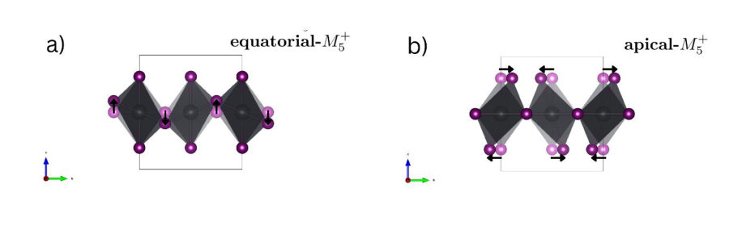
<figcaption class="paper-figure-caption"><b>Fig 4.</b> Figure 4. Graphical representation of the 𝑀5</figcaption>
</figure>
<figure class="paper-figure-card">
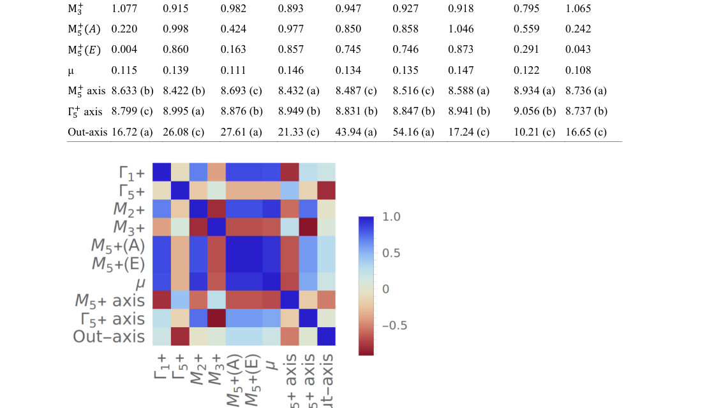
<figcaption class="paper-figure-caption"><b>Fig 5.</b> Figure 5. Correlation heat map for structural and exciton-reduced-mass parameters from Table 5, where blue indicates positive correlation values and red indicates negative correlation values. The 𝑀5</figcaption>
</figure>
</div>

<p><strong>Summary.</strong> This work tackles the challenge of distinguishing cause from correlation in the relationship between crystal structure and electronic properties in layered perovskites. By employing group theory to decompose structural distortions into fundamental symmetry modes, the authors systematically vary these modes using DFT. They successfully demonstrate that specific types of halide displacements directly control the reduced exciton mass, providing a powerful new tool for designing optoelectronic materials.</p>
<p><strong>Why it may be interesting.</strong> While focused on solid-state materials, the rigorous use of symmetry group theory to decouple correlated structural parameters into independent variables mirrors techniques used in analyzing complex quantum Hamiltonians or effective models in AMO physics.</p>
<details>
<summary>Detailed structure</summary>
<p><strong>Main problem.</strong> The study aims to definitively distinguish whether the structural distortions in layered perovskites are the cause or merely correlated with changes in the reduced exciton mass ($\mu$).</p>
<p><strong>Main result.</strong> The analysis reveals that bond-transverse displacements of equatorial halide atoms increase $\mu$, while displacements of apical halide atoms decrease it, establishing new structure-property relationships for exciton engineering.</p>
<p><strong>Method.</strong> The authors use group representation theory to decompose observed distortions into independent symmetry modes, which are then varied individually using Density Functional Theory (DFT) calculations to isolate the effect of each structural component on $\mu$.</p>
<p><strong>Model / system.</strong> The physical system is single-layer (2D) metal-halide perovskite (HOIP) semiconductors, modeled using an inorganic framework of corner-sharing $    ext{BX}_6$ octahedra.</p>
<p><strong>Key observables.</strong> Reduced exciton mass ($\mu$), which is calculated from the effective electron and hole masses ($m_e, m_h$).</p>
<p><strong>Important parameters / regimes.</strong> The amplitudes of specific symmetry modes, such as those corresponding to equatorial and apical halide displacements.</p>
<p><strong>Assumptions / limitations.</strong> The methodology assumes that the structural distortions can be accurately decomposed into independent symmetry modes, allowing for the isolation of causal effects.</p>
<p><strong>Figures summary.</strong> Figures show correlations between $\mu$ and the amplitudes of various symmetry modes ($\Gamma_1^+, M_2^+, \Gamma_5^+, M_5^+, M_3^+$), mapping out how specific bond displacements affect the exciton mass.</p>
<p><strong>Paper structure.</strong> The paper progresses from identifying the correlation between $\mu$ and octahedral tilt to developing a rigorous symmetry-mode analysis framework. It then applies this framework by varying individual mode amplitudes via DFT to establish direct, causal links between specific bond displacements and the resulting electronic structure.</p>
</details>
<details>
<summary>Abstract</summary>
<p>Reduced exciton mass ($μ$) was recently reported to correlate strongly with a framework distortion in a series of nine single-layer (2D) metal-halide perovskite (HOIP) compounds. Specifically, $μ$ was observed to increase in tandem with an alternating PbI4 octahedral tilt about an in-plane axis. In this work, we use group representation theory to decompose the observed framework distortions into displacive symmetry modes of a common high-symmetry parent framework. We find that all nine distorted frameworks involve linear combinations of the same six symmetry modes, which have been reported to contribute to the framework distortions of a wide range of HOIP compounds. We show that these modes have highly correlated impacts on the band structure. To differentiate causation from correlation, we vary the amplitude of each mode independently and use density-functional theory to determine the resulting electronic band structures, from which $μ$ is extracted. We find that bond-transverse displacements of the equatorial halide atoms increase $μ$, while bond-transverse displacements of the apical halide atoms decrease it. Bond-axis displacements appear to have little or no effect on $μ$. Our results demonstrate three new structure-property relationships, revealing a promising new avenue for exciton engineering in layered perovskite materials.</p>
</details>
<p><sub><a href="#top">↑ back to top</a></sub></p>

<p><a id="paper-2609.04330"></a></p>
<h3 id="the-influence-of-quantum-geometry-on-the-phase-boundary-and-collective-excitations-of-electron-liquids-and-crystals"><a href="http://arxiv.org/abs/2609.04330v1">The influence of quantum geometry on the phase boundary and collective excitations of electron liquids and crystals</a></h3>
<p><strong>Authors:</strong> Paul Froese, Mark R. Hirsbrunner, Yong Baek Kim<br>
<strong>Type:</strong> theory · <strong>Category:</strong> strongly correlated electrons · <strong>PDF:</strong> <a href="https://arxiv.org/pdf/2609.04330v1">https://arxiv.org/pdf/2609.04330v1</a><br>
<strong>Analysis basis:</strong> full PDF text, analyzed in chunks
<strong>Topic relevance:</strong> <code>Keldysh / 2PI / non-Gaussian methods</code> <strong>1/5</strong> · <code>analog quantum simulation</code> <strong>1/5</strong></p>
<div class="figure-strip-hint">↔ Scroll figures horizontally</div>
<div class="paper-figures-scroll">
<figure class="paper-figure-card">
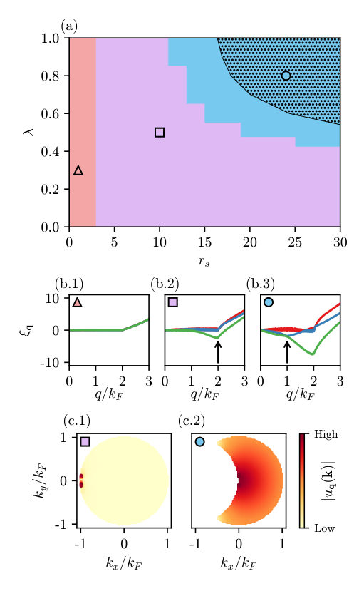
<figcaption class="paper-figure-caption"><b>Fig 1.</b> FIG. 1. (a) The liquid–crystal phase diagram. The dotted re- gion indicates where the crystal phase is lower in energy than the liquid, with the energies computed via TDHF. The colour indicates the nature of any instabilities of the mean-field FL ground state. In the red region, no eigenvalues of the stabil- ity matrix Sq are significantly negative. In the purple region, Sq possesses one band with negative eigenvalues, peaked at q = 2kF. In the blue region, there are two bands with nega- tive eigenvalues, one peaked at q = 2kF and one at q = kF. (b) Band structures of Sq at three representative points in the phase diagram. Each plot depicts the three lowest eigenval- ues of Sq as a function...</figcaption>
</figure>
<figure class="paper-figure-card">
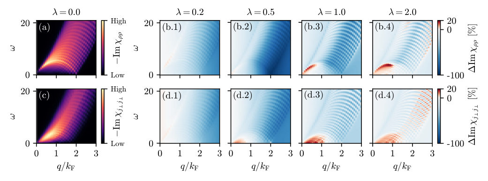
<figcaption class="paper-figure-caption"><b>Fig 2.</b> FIG. 2. (a) The imaginary part of the density-density response, χρρ(q, ω), in the Fermi liquid phase at rs = 1 and λ = 0. (b) The percent change in the imaginary part of the density-density response compared to the λ = 0 case for four values of λ, demonstrating how non-trivial quantum geometry reshapes the response. (c) The imaginary part of the transverse current-current response, χj⊥j⊥(q, ω), for rs = 1 and λ = 0. (d) The percent change in the imaginary part of the transverse current-current response compared to the λ = 0 case.</figcaption>
</figure>
<figure class="paper-figure-card">
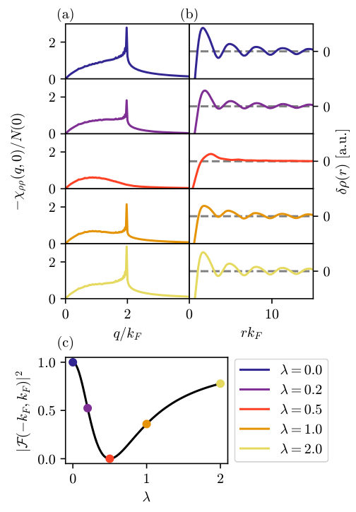
<figcaption class="paper-figure-caption"><b>Fig 3.</b> FIG. 3. (a) The static limit of the density-density response χρρ(q, ω = 0) in the Fermi liquid at rs = 1 for a range of differ- ent λ. The sharp peaks at q = 2kF correspond to Friedel oscil- lations in the real space charge density. (b) The induced real space charge density δρ(r), given by a Fourier transform of χρρ(q, 0). The peak at 2kF and corresponding real space oscil- lations vanish at λ = 0.5. (c) The form factor |F(−kF, kF)|2, which connects states at opposite edges of the Fermi surface, the relevant scattering states for Friedel oscillations. The ma- trix element is completely suppressed at λ = 0.5.</figcaption>
</figure>
<figure class="paper-figure-card">
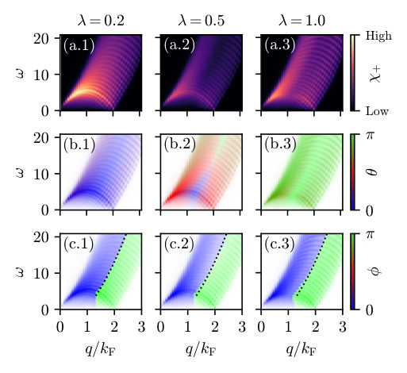
<figcaption class="paper-figure-caption"><b>Fig 4.</b> FIG. 4. (a.1-a.3) The dominant eigenvector of the orbital- resolved density-density response, χ+, in the Fermi liquid at rs = 1, plotted for λ = 0.2, 0.5, and 1.0, respectively. (b.1- b.3) The angle θ that characterizes the orbital polarization of the response for the same values of λ. When θ = 0, the response is entirely polarized on the pseudospin ↑orbital, and entirely polarized on the ↓orbital when θ = π. (c.1-c.3) The angle ϕ that characterizes the phase of the inter-orbital re- sponse. This phase is only meaningful if 0 &lt; θ &lt; π, in regions where both orbitals contribute. ϕ = 0 indicates an in-phase response, while ϕ = π indicates an out-of-phase response. The black dotted lines depict...</figcaption>
</figure>
<figure class="paper-figure-card">
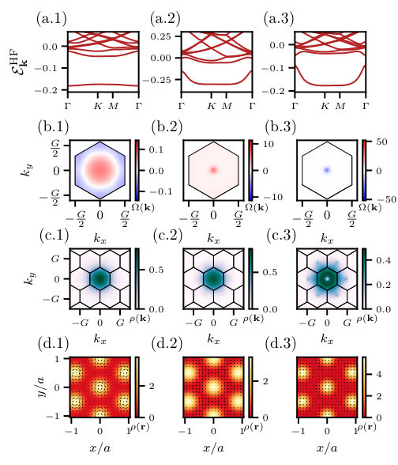
<figcaption class="paper-figure-caption"><b>Fig 5.</b> FIG. 5. The (a) HF band structure plotted along high- symmetry lines across the BZ, (b) Berry curvature of the lowest occupied band, (c) momentum space occupation ρ(k), and (d) real-space charge density, of three different crystalline phases. Panels (a.1-d.1) correspond to the WC at rs = 20, λ = 0.2, (a.2-d.2) correspond to the AHC at rs = 10, λ = 1.6, and (a.3-d.3) correspond to the HWC at rs = 20, λ = 2.0. The charge density in (d) is depicted by the coloured map, and the ground state current density is overlaid with arrows.</figcaption>
</figure>
</div>

<p><strong>Summary.</strong> This theoretical work analyzes the interplay between quantum geometry and electron interactions in 2D electron systems, using the $\lambda$-jellium model. By applying TDHF, the authors demonstrate that quantum geometry stabilizes the crystalline phase and modifies collective excitations like plasmons. The findings provide deeper insight into the fundamental mechanisms driving electronic phase transitions in correlated materials.</p>
<p><strong>Why it may be interesting.</strong> The explicit inclusion of quantum geometry (via Berry curvature) into the many-body Hamiltonian provides a mechanism to tune electronic properties, which is highly relevant for understanding topological materials and correlated electron behavior in low-dimensional systems.</p>
<details>
<summary>Detailed structure</summary>
<p><strong>Main problem.</strong> The study investigates how quantum geometry influences the phase boundary and the nature of collective excitations in electron systems, specifically comparing liquid and crystalline states.</p>
<p><strong>Main result.</strong> Quantum geometry is found to favor electron crystallization, shifting the transition to higher densities, and it causes spectral weight transfer leading to the suppression of plasmon dispersion in the liquid phase.</p>
<p><strong>Method.</strong> The primary method employed is Time-dependent Hartree-Fock (TDHF) applied to the $\lambda$-jellium model, supplemented by the Quasi-boson approximation to analyze collective modes.</p>
<p><strong>Model / system.</strong> The system is modeled using the $\lambda$-jellium model, which describes interacting electron liquids and crystals in platforms like multilayer graphene. The model incorporates a non-trivial quantum geometry characterized by a Berry curvature distribution $\Omega(\mathbf{q})$.</p>
<p><strong>Key observables.</strong> Electron liquid–crystal phase diagram, collective modes (plasmon mode, density/current responses), and instabilities in the Fermi liquid ground state.</p>
<p><strong>Important parameters / regimes.</strong> The key parameters are the interaction strength ($r_s$) and the quantum geometry scale ($\lambda$), which controls the momentum-space skyrmion texture.</p>
<p><strong>Assumptions / limitations.</strong> The analysis relies on the TDHF formalism, which is noted to be perturbative and suffers from mean-field instabilities at low densities. The $\lambda$-jellium model is used as a simplified representation.</p>
<p><strong>Paper structure.</strong> The paper progresses by first establishing the physical model and the role of quantum geometry. It then applies TDHF to map the phase diagram, analyzing instabilities in the liquid phase and identifying corresponding modes in the crystal phase.</p>
</details>
<details>
<summary>Abstract</summary>
<p>Recent experiments on multilayer graphene systems have reinvigorated the study of electron crystallization, now with the inclusion of quantum geometry. In this work, we apply time-dependent Hartree-Fock (TDHF) to the $λ$-jellium model to analyze the impact that quantum geometry has on the electronic liquid--crystal phase diagram and how it modifies the collective modes and responses of the liquid and crystal phases. In agreement with recent results utilizing neural quantum states, we find that quantum geometry favours electron crystallization, shifting the transition to higher densities. We also study the instabilities revealed by TDHF in the Fermi liquid ground state at low densities, providing insight into the fluctuations driving the crystallization transition. We further find that quantum geometry reduces the dispersion of the plasmon mode and suppresses Friedel oscillations deep in the liquid phase. Resolving the density response in terms of individual orbitals, we find that this suppression is caused by spectral weight transfer to an out-of-phase inter-orbital mode. Finally, we show that an analogous mode that emerges in the crystal phase corresponds to the breathing mode of an emergent real-space pseudospin skyrmion lattice.</p>
</details>
<p><sub><a href="#top">↑ back to top</a></sub></p>

<p><a id="paper-2609.04397"></a></p>
<h3 id="accelerating-atom-simulations-with-variable-block-sparse-matrix-library"><a href="http://arxiv.org/abs/2609.04397v1">Accelerating Atom Simulations with Variable-Block Sparse Matrix Library</a></h3>
<p><strong>Authors:</strong> Zhanghao Zhouyin, Hong Guo<br>
<strong>Type:</strong> theory · <strong>Category:</strong> numerical methods · <strong>PDF:</strong> <a href="https://arxiv.org/pdf/2609.04397v1">https://arxiv.org/pdf/2609.04397v1</a><br>
<strong>Analysis basis:</strong> full PDF text, analyzed in chunks
<strong>Topic relevance:</strong> <code>analog quantum simulation</code> <strong>1/5</strong></p>
<div class="figure-strip-hint">↔ Scroll figures horizontally</div>
<div class="paper-figures-scroll">
<figure class="paper-figure-card">

<figcaption class="paper-figure-caption"><b>Fig 1.</b> FIG. 1. VBCSR uses a shared distributed graph and a unified Python-facing matrix interface across automatically selected CSR, BSR, and VBCSR backends. The backends support common sparse operations through MPI communication, thread-level parallelism, and dense numerical kernels.</figcaption>
</figure>
<figure class="paper-figure-card">
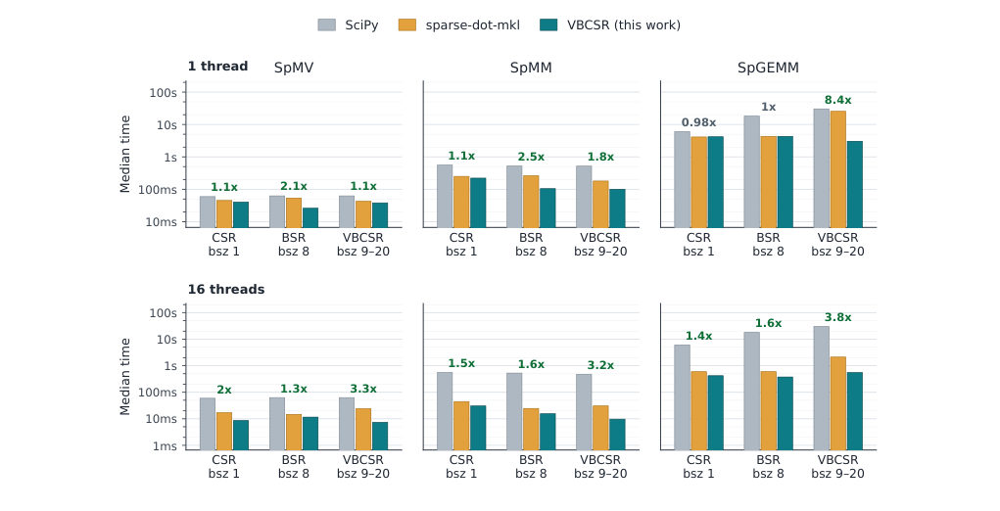
<figcaption class="paper-figure-caption"><b>Fig 2.</b> FIG. 2. Kernel-efficiency benchmarks for sparse matrix-vector multiplication (SpMV), sparse matrix-dense matrix multiplica- tion (SpMM), and sparse general matrix-matrix multiplication (SpGEMM). Each structural domain targets a matrix storage budget of approximately 500 MiB; graph block counts therefore differ by domain. CSR uses scalar blocks, BSR uses block size 8, and VBCSR uses variable block sizes from 9 to 20. SpMM uses 16 right-hand sides, and the reported SpGEMM case uses zero threshold. Bars report the median kernel time over seven timed repetitions following three warm-up iterations. Speedup labels report VBCSR performance relative to the fastest reference implementation; values...</figcaption>
</figure>
<figure class="paper-figure-card">
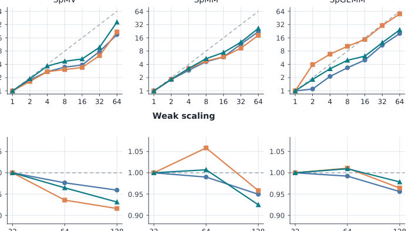
<figcaption class="paper-figure-caption"><b>Fig 3.</b> FIG. 3. Distributed scaling benchmarks. Strong scaling uses a fixed global matrix storage target of approximately 500 MiB per structural domain. Weak scaling keeps the local matrix size approximately fixed at 32 MiB per rank and per domain, and increases the global problem size in proportion to the MPI rank count. Strong-scaling speedup is measured as S(p) = T(1)/T(p), and weak-scaling efficiency is defined as Ew(p) = T(32)/T(p), where T denotes the execution time. Dashed curves mark ideal strong scaling and ideal weak-scaling efficiency.</figcaption>
</figure>
<figure class="paper-figure-card">
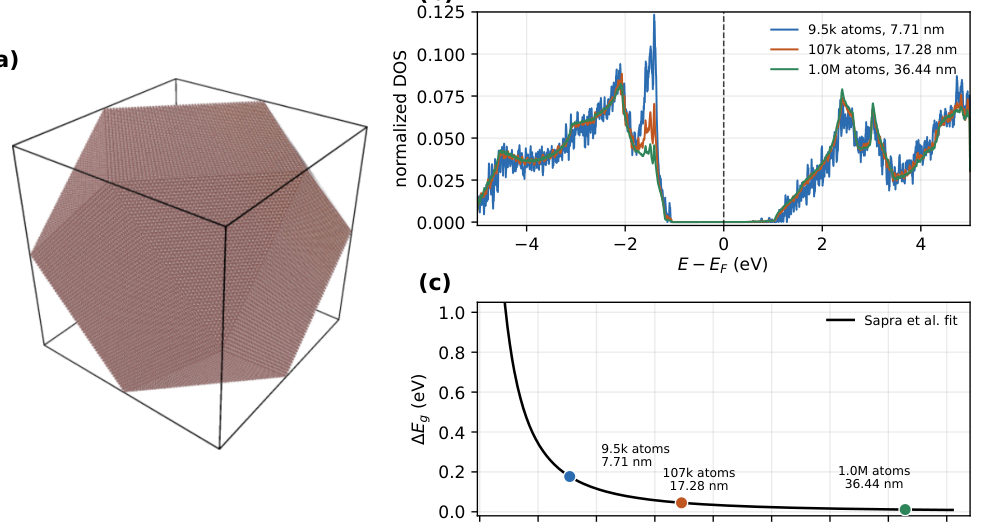
<figcaption class="paper-figure-caption"><b>Fig 4.</b> FIG. 4. Atomistic density-of-states and band-gap calculation for hydrogen-passivated zinc-blende InP nanoparticles. (a) Visualization of the largest completed particle, containing 1,063,609 atoms including surface H passivation, with an effective diameter of 36.44 nm. (b) Normalized DOS for the three particle sizes studied here: 12,083 atoms (D = 7.71 nm), 120,250 atoms (D = 17.28 nm), and 1,063,609 atoms (D = 36.44 nm). The DOS is computed from the In(sp3)–P(sp3d5)–H(s) tight-binding Hamiltonian with interactions through second-nearest neighbours, using the parameterization of Sapra et al. [11]. The spectra are aligned to a common mid-gap reference energy and shown as normalized DOS per...</figcaption>
</figure>
</div>

<p><strong>Summary.</strong> This paper introduces VBCSR, a novel distributed sparse matrix library designed to efficiently handle the block-sparse matrices arising from localized orbital representations in atomistic simulations. By automatically adapting to variable block sizes and optimizing kernel execution, VBCSR significantly accelerates linear algebra operations. It successfully demonstrates its scalability and accuracy by simulating the electronic structure of large InP nanoparticles.</p>
<p><strong>Why it may be interesting.</strong> While focused on numerical acceleration, the ability to efficiently handle complex, spatially varying Hamiltonians derived from localized orbitals is crucial for simulating open quantum systems and material properties in AMO physics.</p>
<details>
<summary>Detailed structure</summary>
<p><strong>Main problem.</strong> The core challenge is accelerating large-scale atomistic simulations that generate sparse block matrices with variable block shapes due to localized orbital representations.</p>
<p><strong>Main result.</strong> The proposed VBCSR library significantly outperforms existing reference implementations for block-sparse benchmarks, achieving speedups up to 8.4x for SpGEMM.</p>
<p><strong>Method.</strong> VBCSR is a distributed sparse matrix library that automatically selects between CSR, BSR, or VBCSR formats, grouping blocks of equal shape for optimized dense kernel execution.</p>
<p><strong>Model / system.</strong> The library is applied to atomistic systems, specifically simulating InP nanoparticles using a tight-binding Hamiltonian with localized $sp^3$ orbitals.</p>
<p><strong>Key observables.</strong> Performance benchmarks (speedup), density of states (DOS), and size-dependent band gap shifts ($\Delta E_g$).</p>
<p><strong>Important parameters / regimes.</strong> System size up to $10^6$ atoms, various block-size regimes, and parallelization levels (up to 16 threads/128 MPI ranks).</p>
<p><strong>Assumptions / limitations.</strong> The speedups are specific to tested operators and hardware; the method assumes the ability to map physical atomic structure onto a block-graph model.</p>
<p><strong>Figures summary.</strong> Figure 1 illustrates the unified interface mapping physical structure to CSR/BSR/VBCSR backends. Figure 2 compares kernel times and speedups across different domains. Figure 3 shows strong/weak scaling. Figure 4 displays DOS and band-gap shifts for varying nanoparticle sizes.</p>
<p><strong>Paper structure.</strong> The paper introduces VBCSR to solve the block-sparse matrix problem, details its automatic backend selection and acceleration mechanisms (grouping/kernels), benchmarks its performance against references, and finally demonstrates its application to calculating electronic properties (DOS, band gap) of large InP nanoparticles.</p>
</details>
<details>
<summary>Abstract</summary>
<p>Modern atomistic simulations increasingly employ localized orbitals to represent quantum operators, yielding sparse block matrices whose block shapes vary with chemical species and basis choice. Conventional scalar sparse formats store the entries of each block individually, obscuring this local structure and limiting the use of efficient block algorithms. We present VBCSR, a distributed sparse matrix library that preserves variable-size atomic blocks and accelerates the core linear algebra of large-scale atomistic simulations. A unified interface automatically maps scalar, uniform-basis, and multispecies operators to compressed sparse row (CSR), block sparse row (BSR), or variable-block compressed sparse row (VBCSR). Our advanced acceleration method groups blocks of equal shape and dispatches them to optimized dense kernels. In the reported benchmarks, VBCSR outperforms the tested Python-accessible reference implementations for several block-sparse benchmarks. We further demonstrate VBCSR in an InP nanoparticle application containing more than \(10^6\) atoms.</p>
</details>
<p><sub><a href="#top">↑ back to top</a></sub></p>

<p><a id="paper-2609.04524"></a></p>
<h3 id="dprq-a-dynamic-programming-based-qubit-routing-algorithm-for-collective-communication-in-distributed-quantum-computing"><a href="http://arxiv.org/abs/2609.04524v1">DPRQ: A Dynamic Programming-based Qubit Routing Algorithm for Collective Communication in Distributed Quantum Computing</a></h3>
<p><strong>Authors:</strong> Dhaval Vaidya, Ruozhou Yu<br>
<strong>Type:</strong> theory · <strong>Category:</strong> quantum information and computing · <strong>PDF:</strong> <a href="https://arxiv.org/pdf/2609.04524v1">https://arxiv.org/pdf/2609.04524v1</a><br>
<strong>Analysis basis:</strong> full PDF text, analyzed in chunks
<strong>Topic relevance:</strong> <code>analog quantum simulation</code> <strong>1/5</strong></p>
<div class="figure-strip-hint">↔ Scroll figures horizontally</div>
<div class="paper-figures-scroll">
<figure class="paper-figure-card">
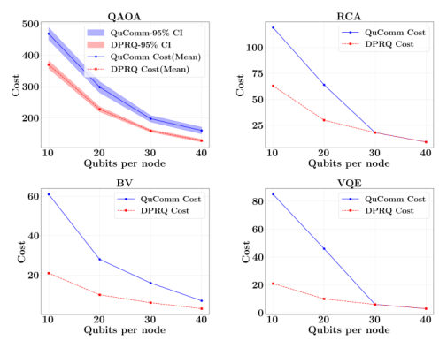
<figcaption class="paper-figure-caption"><b>Fig 1.</b> Figure 3: Cost comparison of DPRQ and QuComm on the four benchmark circuits as number of qubits per node increases from 10 to 40. The EPR capacity is 3 and the total number of qubits is 150.</figcaption>
</figure>
<figure class="paper-figure-card">
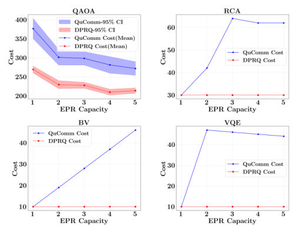
<figcaption class="paper-figure-caption"><b>Fig 2.</b> Figure 1: The cost comparison of DPRQ and QuComm on the four benchmark circuits as the EPR capacity increases from 1 to 5. The total number of qubits is 150 and the qubits per node is 20.</figcaption>
</figure>
<figure class="paper-figure-card">
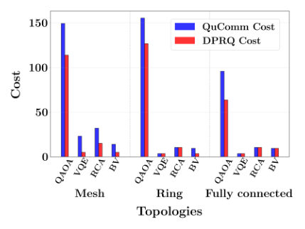
<figcaption class="paper-figure-caption"><b>Fig 3.</b> Figure 4: Cost comparison of DPRQ and QuComm for 3 dif- ferent network topologies on the four benchmark circuits. The EPR capacity is 3, total number of qubits is 150 and the number of qubits per node is 20.</figcaption>
</figure>
<figure class="paper-figure-card">
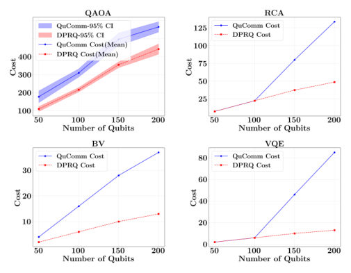
<figcaption class="paper-figure-caption"><b>Fig 4.</b> Figure 2: Cost comparison of DPRQ and QuComm on the 4 benchmark circuits as total number of qubits increases from 50 to 200. The EPR capacity is 3 and the number of qubits per node is 20.</figcaption>
</figure>
</div>

<p><strong>Summary.</strong> This paper introduces DPRQ, a dynamic programming algorithm designed to optimize qubit routing for distributed quantum computing. It addresses the critical bottleneck of inter-node communication by optimizing entanglement resource usage across the entire circuit, not just local blocks. DPRQ significantly outperforms existing greedy methods, providing a robust framework for scaling quantum computation across multiple processors.</p>
<p><strong>Why it may be interesting.</strong> While focused on quantum networking, the optimization techniques (dynamic programming, resource minimization across coupled subsystems) are highly relevant to modeling complex quantum many-body dynamics or open quantum systems where resource constraints dictate feasible evolution paths.</p>
<details>
<summary>Detailed structure</summary>
<p><strong>Main problem.</strong> The primary challenge addressed is minimizing the inter-node communication cost, specifically the required entanglement resource (EPR pairs), in Distributed Quantum Computing (DQC) circuits.</p>
<p><strong>Main result.</strong> The proposed DPRQ algorithm achieves significant reductions in inter-node communication, showing an average reduction of 24.40% and a maximum reduction of 85.06% compared to the state-of-the-art QuComm compiler.</p>
<p><strong>Method.</strong> DPRQ employs a dynamic programming approach to optimize qubit routing globally across the entire quantum circuit, unlike greedy methods that only optimize within local blocks.</p>
<p><strong>Model / system.</strong> The model is Distributed Quantum Computing (DQC) implemented across a network of quantum processors, where communication relies on consuming EPR pairs via quantum teleportation.</p>
<p><strong>Key observables.</strong> Inter-node communication cost, measured by the number of EPR pairs consumed, and the resulting percentage reduction compared to baseline algorithms.</p>
<p><strong>Important parameters / regimes.</strong> EPR Capacity (E(n_a)), total number of data qubits (up to 200), and the specific DQC network topology (e.g., mesh-grid, ring).</p>
<p><strong>Assumptions / limitations.</strong> The analysis assumes the circuit consists of one-qubit and two-qubit gates, and the DP formulation simplifies the tracking of qubit layouts to manage computational complexity.</p>
<p><strong>Figures summary.</strong> Figures compare the communication cost of DPRQ versus QuComm across varying parameters, including increasing EPR capacity, increasing total qubits, increasing qubits per node, and across different network topologies.</p>
<p><strong>Paper structure.</strong> The paper progresses from establishing the bottleneck of DQC communication to introducing DPRQ, detailing the intra-block cost calculation using an optimal aggregator node, and finally applying the dynamic programming approach for global, inter-block optimization.</p>
</details>
<details>
<summary>Abstract</summary>
<p>Distributed quantum computing (DQC) offers a promising approach to scale quantum computing by overcoming the resource limitations of a single quantum processor. However, inter-node communication remains a major bottleneck of DQC due to inefficient and error-prone entanglement distribution. Optimizing inter-node communication can not only reduce the amount of entanglement resource needed to execute a quantum circuit but also improve execution speed and accuracy of the results. This paper proposes DPRQ, a qubit routing algorithm for minimizing inter-node communication in distributed quantum circuits divided into collective communication blocks. Unlike current approaches that utilize greedy block-level qubit routing strategies, DPRQ employs a dynamic programming-based technique focused on global circuit-level optimization, while capturing inter-block dependencies. We evaluated DPRQ on four sets of quantum circuits and a variety of DQC configurations. The results demonstrate that DPRQ's innovative routing strategy achieves an average of 24.40% reduction with a maximum of 85.06% reduction in inter-node communication, when compared to the state-of-the-art collective communication-based DQC compiler QuComm.</p>
</details>
<p><sub><a href="#top">↑ back to top</a></sub></p>

<p><a id="paper-2609.04370"></a></p>
<h3 id="dual-charge-density-waves-in-two-dimensional-dyte3-and-their-distinct-impacts-on-magneto-transport-properties"><a href="http://arxiv.org/abs/2609.04370v1">Dual Charge-Density-Waves in Two-dimensional DyTe3 and Their Distinct Impacts on Magneto-Transport Properties</a></h3>
<p><strong>Authors:</strong> Shuvankar Gupta, Yasemin Ozbek, Olajumoke Oluwatobiloba Emmanuel, Maya Bostock, Johnathan Kowalski, Pengpeng Zhang, Xianglin Ke<br>
<strong>Type:</strong> experiment · <strong>Category:</strong> strongly correlated electrons · <strong>PDF:</strong> <a href="https://arxiv.org/pdf/2609.04370v1">https://arxiv.org/pdf/2609.04370v1</a><br>
<strong>Analysis basis:</strong> full PDF text, analyzed in chunks
<strong>Topic relevance:</strong> <code>Frenkel-Kontorova</code> <strong>1/5</strong></p>
<div class="figure-strip-hint">↔ Scroll figures horizontally</div>
<div class="paper-figures-scroll">
<figure class="paper-figure-card">
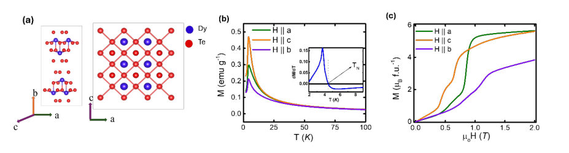
<figcaption class="paper-figure-caption"><b>Fig 1.</b> Figure 1: (a) Crystal structure of DyTe3, showing the overall structure (left) and an in-plane</figcaption>
</figure>
<figure class="paper-figure-card">
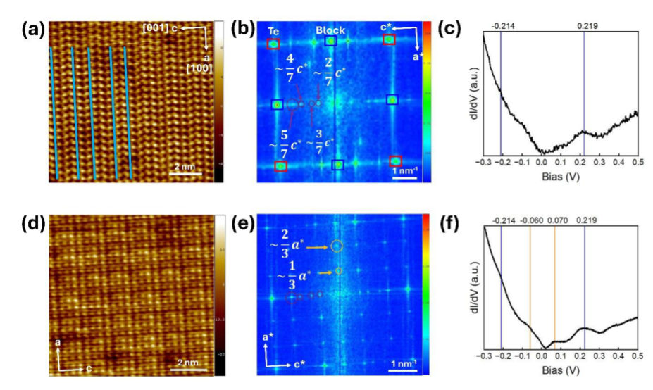
<figcaption class="paper-figure-caption"><b>Fig 2.</b> Figure 2: (a-c) STM data at 77K. (a) Morphology scan displaying the incommensurate first</figcaption>
</figure>
<figure class="paper-figure-card">
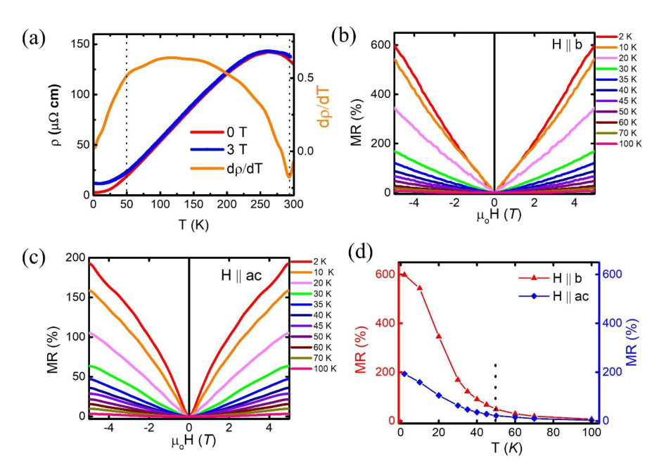
<figcaption class="paper-figure-caption"><b>Fig 3.</b> Figure 3: (a) Temperature dependence of in-plane (ac-plane) resistivity measured at 0 T and 3</figcaption>
</figure>
<figure class="paper-figure-card">
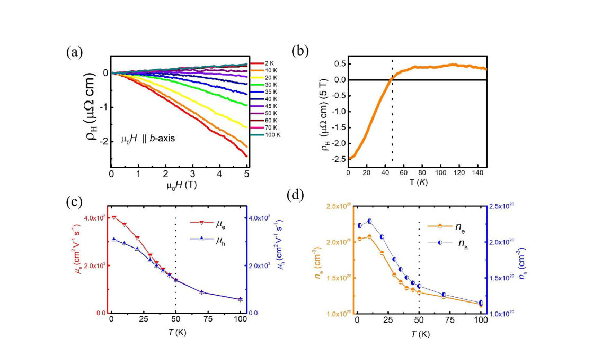
<figcaption class="paper-figure-caption"><b>Fig 4.</b> Figure 4: (a) Magnetic field-dependence of in-plane (ac-plane) Hall resistivity (ρH) measured</figcaption>
</figure>
</div>

<p><strong>Summary.</strong> This work investigates how two distinct, coexisting Charge-Density-Waves (CDW1 and CDW2) affect the electronic transport in the material DyTe3. By combining STM measurements with magnetotransport analysis, the authors demonstrate that while CDW1 shows little transport anomaly, the emergence of CDW2 causes a dramatic enhancement in magnetoresistance and a unique nonlinear Hall response. This establishes DyTe3 as a key model system for understanding multiple CDW effects.</p>
<p><strong>Why it may be interesting.</strong> The study provides a concrete example of how multiple competing quantum ground states (multiple CDWs) can lead to complex, distinct, and measurable changes in macroscopic transport properties, which is relevant to understanding correlated electron physics in low-dimensional materials.</p>
<details>
<summary>Detailed structure</summary>
<p><strong>Main problem.</strong> To investigate the distinct impacts of two orthogonal Charge-Density-Waves (CDW1 and CDW2) coexisting at low temperature in DyTe3 on its electronic transport properties.</p>
<p><strong>Main result.</strong> The emergence of CDW2 drives a drastic enhancement in magnetoresistance and a multiband-governed nonlinear Hall response, indicating that the two CDWs affect transport in qualitatively distinct ways.</p>
<p><strong>Method.</strong> The study combines Scanning Tunneling Microscopy/Spectroscopy (STM/STS) to identify CDW phases with magnetotransport measurements (Magnetoresistance and Hall resistivity) analyzed using a two-band model.</p>
<p><strong>Model / system.</strong> The physical system is DyTe3, a quasi-two-dimensional Van der Waals layered crystal belonging to the rare-earth tritellurides (RTe3). The research focuses on the electronic consequences of multiple, coexisting CDW states.</p>
<p><strong>Key observables.</strong> Magnetoresistance (MR), nonlinear Hall response ($
ho_H$), CDW periodicity/wavevectors ($ ext{q}_1,   ext{q}_2$), and spectral gaps measured via STS.</p>
<p><strong>Important parameters / regimes.</strong> Low temperature (down to 4.5 K), the transition temperatures of the two CDWs ($ ext{T}<em ext_CDW2="ext{CDW2">{    ext{CDW1}} \sim 308     ext{K}$, $  ext{T}</em>$), and applied magnetic fields (H).}} \sim 50  ext{K</p>
<p><strong>Assumptions / limitations.</strong> The analysis of transport data relies on fitting the results to a minimal two-band model to characterize carrier dynamics.</p>
<p><strong>Figures summary.</strong> Figures show the layered crystal structure, STM/FFT confirming the coexistence of CDW1 and CDW2, and plots of resistivity/Hall resistivity vs. T and H demonstrating anomalies correlated with the onset of CDW2.</p>
<p><strong>Paper structure.</strong> The paper establishes the structural context (crystal structure), uses STM/STS to confirm the coexistence of two distinct CDWs, and then analyzes the transport properties (MR and $
ho_H$) to show that the two CDWs have different impacts on electronic conduction.</p>
</details>
<details>
<summary>Abstract</summary>
<p>Charge-density-waves (CDWs) are macroscopic quantum states defined by periodic modulations in electronic charge density coupled with lattice distortions. Despite significant research efforts, the evolution of electromagnetic transport properties in the presence of CDWs remains largely unexplored. Here, we report the effects of two orthogonal CDWs (CDW1 and CDW2) coexisting at low-temperature in DyTe3 on its electronic transport properties. Importantly, we find that while no clear magnetotransport anomaly is resolved across CDW1 transition under the present experimental conditions, the emergence of CDW2 drives a drastic enhancement in magnetoresistance and a multiband-governed nonlinear Hall response. These results demonstrate that CDW1 and CDW2 in DyTe3 are fundamentally different and impact its electronic transport in qualitatively distinct ways, establishing DyTe3 as a model system for understanding the transport consequences of multiple CDWs in quasi-two-dimensional materials.</p>
</details>
<p><sub><a href="#top">↑ back to top</a></sub></p>

<p><a id="paper-2609.04378"></a></p>
<h3 id="fukui-kawakami-chains-spectrum-and-hidden-math602math-symmetry"><a href="http://arxiv.org/abs/2609.04378v1">Fukui-Kawakami chains: spectrum and hidden $\mathfrak{gl}(1|1)$-symmetry</a></h3>
<p><strong>Authors:</strong> Rob Klabbers, Antoine Lefebvre<br>
<strong>Type:</strong> theory · <strong>Category:</strong> strongly correlated electrons · <strong>PDF:</strong> <a href="https://arxiv.org/pdf/2609.04378v1">https://arxiv.org/pdf/2609.04378v1</a><br>
<strong>Analysis basis:</strong> full PDF text, analyzed in chunks
<strong>Topic relevance:</strong> <code>Frenkel-Kontorova</code> <strong>1/5</strong></p>
<div class="figure-strip-hint">↔ Scroll figures horizontally</div>
<div class="paper-figures-scroll">
<figure class="paper-figure-card">
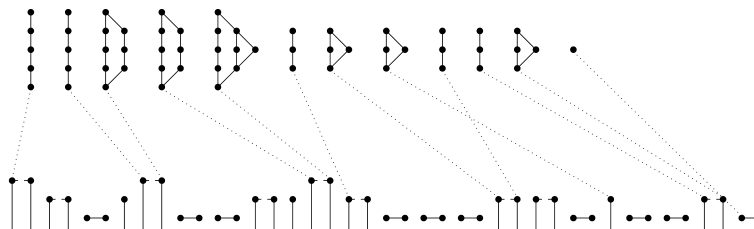
<figcaption class="paper-figure-caption"><b>Fig 1.</b> Figure 1. Schematic picture of the spectra of the twisted and untwisted chains for length N = 6. Each dot represents an eigenvector. The vectors in the upper picture represent the untwisted (HS) chain, and are grouped by Yangian representations and labelled by four times their energy. The lower picture represents the twisted chain (at φ = 1/2), with the vectors grouped into quadruplets (or doublets) as generated by the action of the spin-flip and parity operators, also labelled by four times their energy. The dotted lines between the upper and lower spectra indicate how the Yangian-highest-weight state of a Yangian representation in the untwisted chain gives rise to an eigenvector in the...</figcaption>
</figure>
<figure class="paper-figure-card">
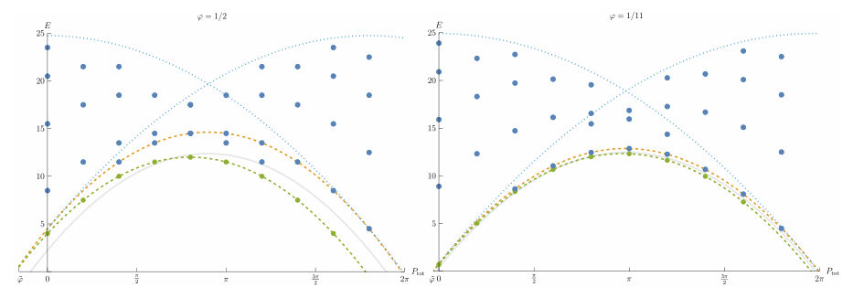
<figcaption class="paper-figure-caption"><b>Fig 2.</b> Figure 2. The two magnon spectrum at length N = 10 for φ = 1/2 and φ = 1/11 in the energy-momentum plane, with ˜φ = 2πφ/N. The blue dots are motif states as parametrised by ( IV.13 ) (allowing for µ1 = 0), with energies that are sums of single particle energies, and lie above the single particle dispersion (indicated in gray) but below the (two-valued, blue dotted) curve of two identical magnons. The orange dashed line contains the descendants obtained by adding a zero-momentum excitation. The green dashed line contains the descendants (as green dots) which cannot be obtained from ( IV.13 ). In the limit φ →0 the three curves, as well as the dots on them, coincide (see e.g. Fig.12 in [ 24...</figcaption>
</figure>
<figure class="paper-figure-card">

<figcaption class="paper-figure-caption"><b>Fig 3.</b> Figure 3. Graphical depictions of three of the spin chains discussed in § VI . In (a), the Fukui-Kawakami chain corresponding to φ = 1/2, characterised by the antiperiodic boundary condition, with a typical pair interaction indicated by the dashed line. In (b), the chain introduced in [ 14 ], which can be thought of as taking a chain (in orange) and gluing its spin-flipped mirror to it (in blue), with spins connected to their mirror by a dotted line. Considering interactions between each pair of spins, and between each pair of a spin and a mirror spin, as indicated by the dashed lines. In (c), the gl(1|1) HS chain, with each site either empty (◦) or occupied by a fermion (•), with pair...</figcaption>
</figure>
<figure class="paper-figure-card">

<figcaption class="paper-figure-caption"><b>Fig 4.</b> Figure 4. Schematic picture of the Hilbert space for the supersymmetric chain for length N = 6. It consists of gl(1|1)-doublets only, which are labelled uniquely by a supermotif as indicated on the bottom and four times their energy on the top. For easy comparison we have organised the spectrum using its decomposition into Sz-eigenspaces rather than the gl(1|1)-native fermionic number operator NG = N/2 −Sz from ( VI.9 ). Compare with the bottom half of Fig. 1 , which uses a different method to organise the same spectrum.</figcaption>
</figure>
</div>

<p><strong>Summary.</strong> This work studies the spectral properties of Fukui-Kawakami (FK) chains, which are twisted versions of the Haldane-Shastry spin chain. The authors establish that the antiperiodic case reveals a hidden $\mathfrak{gl}(1|1)$-symmetry. This symmetry is crucial as it connects the chain's structure to supersymmetric models, providing deep theoretical understanding of its integrability.</p>
<p><strong>Why it may be interesting.</strong> The discovery of hidden $\mathfrak{gl}(1|1)$-symmetry in a spin chain model provides deep structural insights into its solvability, connecting it to supersymmetric generalizations relevant in condensed matter theory.</p>
<details>
<summary>Detailed structure</summary>
<p><strong>Main problem.</strong> The paper revisits and analyzes the spectrum and hidden symmetries of Fukui-Kawakami (FK) chains, which are twisted deformations of the trigonometric Haldane-Shastry (HS) spin chain.</p>
<p><strong>Main result.</strong> The antiperiodic FK chain possesses a hidden $\mathfrak{gl}(1|1)$-symmetry, which allows relating the HS motifs to their supersymmetric counterparts. The spectrum is partially described by twisted Bethe equations.</p>
<p><strong>Method.</strong> The analysis uses techniques involving Yangian symmetry, twisted boundary conditions, and relating the system to known integrable models via spectral analysis.</p>
<p><strong>Model / system.</strong> The system is an integrable spin chain, specifically the FK chain, which is a twisted version of the trigonometric Haldane-Shastry (HS) spin chain. The analysis focuses on the antiperiodic boundary condition case.</p>
<p><strong>Key observables.</strong> Energy spectrum ($E_{fk}$), Yangian highest weight states, and the presence of hidden symmetries.</p>
<p><strong>Important parameters / regimes.</strong> The twist parameter ($\varphi$), the chain length ($N$), and the underlying spin structure.</p>
<p><strong>Assumptions / limitations.</strong> The analysis only constructs <em>part</em> of the spectrum using the Bethe equations, and the integrability of the FK chains remains open.</p>
<p><strong>Figures summary.</strong> Figure 1 schematically compares the spectra of the twisted ($\varphi=1/2$) and untwisted (HS) chains for $N=6$, illustrating the role of Yangian representations.</p>
<p><strong>Paper structure.</strong> The paper analyzes the FK Hamiltonian via twisted boundary conditions, relating its spectrum to the HS chain using Yangian symmetry and Bethe equations. It then focuses on the antiperiodic case to reveal the hidden $\mathfrak{gl}(1|1)$-symmetry, and finally derives mathematical identities related to the underlying structure.</p>
</details>
<details>
<summary>Abstract</summary>
<p>Fukui and Kawakami showed that the trigonometric Haldane--Shastry (HS) spin chain can be deformed by introducing twisted boundary conditions. In this work we revisit the resulting twisted HS chains, which we call Fukui--Kawakami (FK) chains.   We analyse their spectra in dependence of the twist parameter, utilising a direct connection with the (untwisted) HS chain. This allows us to explain why part of the spectrum can be described by Fukui and Kawakami's twisted Bethe equations, and can be constructed from Yangian highest weight states. These states can be labelled by combinatorial data called <code>motifs', as in the HS chain, which cover some of the (deformed) descendants. We furthermore show that there are other descendants which do not follow from these Bethe equations, but whose energy can be described as a sum of two single-particle energies, suggesting additional hidden symmetries.   We then focus on the special case of antiperiodic boundary conditions, and show that this chain coincides with the</code>minimally polarised' long-range model recently introduced by Basu-Mallick, Finkel, and González-López. Remarkably, this connection implies that the antiperiodic chain has a hidden $\mathfrak{gl}(1|1)$-symmetry, which we use to relate the HS motifs to their `supersymmetric' $\mathfrak{gl}(1|1)$ counterparts.</p>
</details>
<p><sub><a href="#top">↑ back to top</a></sub></p>

<p><a id="paper-2609.05185"></a></p>
<h3 id="ni-o-hybridization-as-a-stabilizer-for-math614math-superconductivity-in-lamath615mathnimath616mathomath617math-a-dftrpa-study"><a href="http://arxiv.org/abs/2609.05185v1">Ni-O hybridization as a stabilizer for $s^{\pm}$ superconductivity in La$_3$Ni$_2$O$_7$: a DFT+RPA study</a></h3>
<p><strong>Authors:</strong> Lauro B. Braz, Daniel D. Rivera, Emmanuel V. C. Lopes, George B. Martins, Gustavo M. Dalpian, Luis G. G. V. Dias da Silva<br>
<strong>Type:</strong> theory · <strong>Category:</strong> strongly correlated electrons · <strong>PDF:</strong> <a href="https://arxiv.org/pdf/2609.05185v1">https://arxiv.org/pdf/2609.05185v1</a><br>
<strong>Analysis basis:</strong> full PDF text, analyzed in chunks
<strong>Topic relevance:</strong> <code>Keldysh / 2PI / non-Gaussian methods</code> <strong>1/5</strong></p>
<div class="figure-strip-hint">↔ Scroll figures horizontally</div>
<div class="paper-figures-scroll">
<figure class="paper-figure-card">

<figcaption class="paper-figure-caption"><b>Fig 1.</b> FIG. 1. Schematic representation highlighting the main differences between (a) low-energy models and (b) OProj, as well as their conse- quences for the physics of La3Ni2O7. The low-energy Wannier-based model predicts dominant intralayer ∆AA and ∆BB superconducting pairing leading to d-wave superconductivity (a). By explicitly includ- ing states far from the Fermi level, OProj captures interlayer pairing ∆AB, besides the intralayer ∆AA and ∆BB, leading to a dominant s± wave (b) and important implications for both the magnetic prop- erties of the material.</figcaption>
</figure>
<figure class="paper-figure-card">

<figcaption class="paper-figure-caption"><b>Fig 2.</b> FIG. 2. (a) Isosurfaces including |⟨r|ψa⟩|2 &gt; 0.5 probability of finding an effective electron inside the isosurfaces for the high- pressure (29.5 GPa) bilayer nickelate atomic structure. Colors indi- cate different orbitals and atom types. (b) Fermi surface along the first Brillouin zone with spectral weights (colors) given by the or- thonormalized projections, OProj, model in (a).</figcaption>
</figure>
<figure class="paper-figure-card">

<figcaption class="paper-figure-caption"><b>Fig 3.</b> FIG. 3. OProj (left column) and Wannier (right column) band structure (a,b) and Fermi surface cuts setting kz = 0 (c,d). The color code denotes the spectral weights for the different models. The Wannier model is contrasted with the DFT band structure, the latter shown in grey color in panels (b,d). α, β, γ, and δ in panel (c) label pockets. Panels (c) and (d) show the respective nesting vectors for each model in brown and pool green, respectively. The dashed black lines represent the conventional Brillouin zone of the two- dimensional Ni bilayer square lattice.</figcaption>
</figure>
<figure class="paper-figure-card">

<figcaption class="paper-figure-caption"><b>Fig 4.</b> FIG. 4. Panels (a) and (b) respectively show the spectral weights and the density of states (DOS) for a wider energy range. The density of states is shown in full (black) and in its orbital-resolved components in colors. The OProj features spectral weights beyond the low-energy band width of the Wannier states. Panel (c) shows the normalized occupation number as a function of energy for the Wannier model (green pool full line) and the OProj in three cases: The full model in brown, and imposing cutoff energies of ϵmin = −1.491 and ϵmax = 3.054 eV (yellow dashed line), and ϵmin = −32.01 and ϵmax = 4.843 eV (black dashed line). The inset shows the full energy range where the OProj varies from...</figcaption>
</figure>
<figure class="paper-figure-card">

<figcaption class="paper-figure-caption"><b>Fig 5.</b> Fig. 4(c). Notice that this result is not trivial since it takes into account the spectral weight from both unoccupied and occupied states, as the projection procedure is performed over the entire DFT spectrum (i.e., the sum in Eq. (2)), encompassing all bands in the energy range from roughly −32 eV to +32 eV. As a consequence, the entire n(ω) curve, shown in the inset of Fig. 4, only reaches the maximum occupation (n(∞) = 4) for ω ≳30 eV. Thus, disregarding even a few unnoccupied states far away from the Fermi level in the projection would change the result. This is shown in the black dashed curve in Fig. 4(c), where the set of bands entering the projection procedure was restricted to...</figcaption>
</figure>
</div>

<p><strong>Summary.</strong> This theoretical study investigates the superconducting pairing symmetry in bilayer nickelates using a sophisticated full-spectrum model (OProj). By accurately capturing $    ext{Ni-O}$ hybridization and enhanced interlayer spin fluctuations, the authors argue that the pairing symmetry is $s^{\pm}$, suggesting that retaining the full electronic spectrum is vital for correct predictions in strongly correlated superconductors.</p>
<p><strong>Why it may be interesting.</strong> The rigorous comparison between full-spectrum and low-energy models provides a template for analyzing complex correlated materials where subtle spectral weight redistribution dictates macroscopic properties like superconductivity.</p>
<details>
<summary>Detailed structure</summary>
<p><strong>Main problem.</strong> The superconducting gap symmetry in bilayer nickelates ($ ext{La}_3   ext{Ni}_2   ext{O}_7$) is controversial, depending heavily on the theoretical approach used.</p>
<p><strong>Main result.</strong> Using a full-spectrum model (OProj) that incorporates interlayer coupling enhances spin fluctuations, leading to a prediction of a sign-changing $s^{\pm}$ superconducting state, contrasting with low-energy models that favor $d$-wave pairing.</p>
<p><strong>Method.</strong> The study employs a full-spectrum model based on orthonormalized projections (OProj) of Kohn-Sham states, combined with a weak-coupling matrix random-phase approximation (mRPA) within a spin-fluctuation framework.</p>
<p><strong>Model / system.</strong> The physical system is the bilayer nickelate $  ext{La}_3   ext{Ni}_2   ext{O}_7$. The analysis builds upon DFT calculations, using OProj to accurately model the electronic structure by preserving the full band spectrum, which is crucial for capturing hybridization effects.</p>
<p><strong>Key observables.</strong> Superconducting gap symmetry ($    ext{s}\pm$ vs. $    ext{d}$-wave), interlayer spin fluctuations, orbital-resolved spectral function, and electron occupation numbers ($n$).</p>
<p><strong>Important parameters / regimes.</strong> High pressure (29.5 GPa), $ ext{Ni-O}$ hybridization, and the inclusion of the full electronic spectrum versus low-energy approximations.</p>
<p><strong>Assumptions / limitations.</strong> The OProj method is used to manage the computational complexity while retaining the full DFT band structure; the analysis relies on mapping the system to a molecular-orbital picture for superconductivity.</p>
<p><strong>Figures summary.</strong> Figures compare low-energy vs. OProj predictions for pairing symmetry (Fig. 1), show probability density isosurfaces (Fig. 2), compare band structures (Fig. 3), and illustrate the $s^{\pm}$ mechanism via interlayer pairing (Fig. 7a).</p>
<p><strong>Paper structure.</strong> The paper first establishes the problem of gap symmetry, then details the OProj method to accurately model the electronic structure and hybridization (comparing to Wannier models), followed by applying the spin-fluctuation framework to predict the $s^{\pm}$ pairing symmetry, emphasizing the role of interlayer coupling.</p>
</details>
<details>
<summary>Abstract</summary>
<p>The superconducting gap symmetry of high-pressure bilayer nickelates remains under debate, with weak- and strong-coupling approaches yielding different pairing tendencies. In this work, we investigate how the weak-coupling treatment of electronic states away from the Fermi level influences magnetic fluctuations and superconductivity in La$_3$Ni$_2$O$_7$. We employ a full-spectrum model based on orthonormalized projections of Kohn-Sham states onto local Ni-$e_g$ orbitals, which preserves the density-functional band structure while redistributing spectral weight over a wide energy range. Compared to a low-energy description, this approach yields enhanced interlayer spin fluctuations and a commensurate magnetic instability. Within a spin-fluctuation framework, these features favor a sign-changing $s^\pm$ superconducting state, whereas low-energy models tend to stabilize $d$-wave pairing. Our results suggest that interlayer coupling in full-energy models may play an important role in shaping the predicted pairing symmetry of bilayer nickelates.</p>
</details>
<p><sub><a href="#top">↑ back to top</a></sub></p>

<p><a id="paper-2609.05122"></a></p>
<h3 id="non-local-games-and-communication-complexity-with-noisy-entanglement"><a href="http://arxiv.org/abs/2609.05122v1">Non-local games and communication complexity with noisy entanglement</a></h3>
<p><strong>Authors:</strong> Srijita Kundu, Olivier Lalonde<br>
<strong>Type:</strong> theory · <strong>Category:</strong> quantum information and computing · <strong>PDF:</strong> <a href="https://arxiv.org/pdf/2609.05122v1">https://arxiv.org/pdf/2609.05122v1</a><br>
<strong>Analysis basis:</strong> full PDF text, analyzed in chunks
<strong>Topic relevance:</strong> <code>correlated / nonlocal dissipation</code> <strong>1/5</strong></p>
<div class="figure-strip-hint">↔ Scroll figures horizontally</div>
<div class="paper-figures-scroll">
<figure class="paper-figure-card">

<figcaption class="paper-figure-caption"><b>Fig 1.</b> Figure 1: The two upper bounds for ωuni K (CHSH), and the lower bound. The bound from Theo- rem 49 performs better up to ∥K∥∞= ρ = √</figcaption>
</figure>
<figure class="paper-figure-card">

<figcaption class="paper-figure-caption"><b>Fig 2.</b> Figure 2: The SMP protocol for RealIPD,ε,δ using noisy shared randomness</figcaption>
</figure>
</div>

<p><strong>Summary.</strong> This work rigorously quantifies the degradation of quantum nonlocality and entanglement-assisted communication capacity when quantum resources (EPR pairs) are corrupted by various noise channels. By establishing separation bounds and lower bounds for tasks like the Equality function, it sets fundamental limits on the utility of noisy quantum resources.</p>
<p><strong>Why it may be interesting.</strong> It provides concrete, quantitative measures of how noise degrades quantum correlations, which is crucial for designing robust quantum communication protocols and understanding the limits of quantum computation in realistic noisy environments.</p>
<details>
<summary>Detailed structure</summary>
<p><strong>Main problem.</strong> The paper investigates how noise affects fundamental quantum concepts like nonlocality (non-local games) and the communication capacity derived from shared entanglement.</p>
<p><strong>Main result.</strong> The authors establish separation bounds between communication complexity using noisy versus noiseless entanglement, and derive polynomial lower bounds for computing functions like Equality using noisy EPR pairs.</p>
<p><strong>Method.</strong> The study employs rigorous mathematical analysis, including deriving upper bounds for CHSH games under various noise models and proving parallel repetition theorems for non-local games.</p>
<p><strong>Model / system.</strong> The core model involves Alice and Bob sharing an arbitrarily large number of noisy EPR pairs, subjected to four specific noise channels: depolarizing, unital, biased reset, and erasure noise.</p>
<p><strong>Key observables.</strong> CHSH game value, communication complexity lower bounds, and the distillable entanglement rate.</p>
<p><strong>Important parameters / regimes.</strong> The noise parameters ($\mu, s_1, s_2, \lambda, \epsilon$) and the number of required copies ($n$) of the noisy entangled state.</p>
<p><strong>Assumptions / limitations.</strong> The analysis assumes the shared resource is an unbounded supply of a fixed mixed state, and the results are compared against the ideal noiseless case.</p>
<p><strong>Figures summary.</strong> Table 1 summarizes the derived upper and lower bounds on the noisy quantum value of the CHSH game for the four studied noise models.</p>
<p><strong>Paper structure.</strong> The paper proceeds by analyzing the impact of noise on non-local games (CHSH bounds, parallel repetition theorems), then uses these results to prove separations in communication complexity, and finally establishes lower bounds for specific computational tasks.</p>
</details>
<details>
<summary>Abstract</summary>
<p>We study the impact of noise on the theories of quantum nonlocality and entanglement-assisted communication complexity. We consider non-local games and entanglement-assisted communication complexity in a model where Alice and Bob may share arbitrarily many noisy EPR pairs. We study four noise models: depolarizing noise, unital noise, biased reset noise, and erasure noise. Our results are as follows:   1. We upper bound the value of the CHSH game under all these noise models in terms of the noise parameter, without any assumptions on the measurements used in the strategy.   2. We prove a parallel repetition theorem for general non-local games under all noise models except biased reset noise; we prove an improved parallel repetition theorem for unique games. Our parallel repetition rate is smaller than the quantum parallel repetition rate for CHSH in a nontrivial noise regime.   3. Using our unique-game parallel repetition theorem and a relation defined by the CHSH game, we prove a separation between communication complexity with noisy vs noiseless entanglement. This implies an $Ω(n)$ two-way communication lower bound for distilling $n$ EPR pairs from noisy EPR pairs, in the same nontrivial noise regime.   4. We show that any interactive entanglement-assisted communication protocol can be simulated by an SMP communication protocol with noisy shared randomness, with an exponential blowup in communication. This generalizes a known result on the simulation of noiseless shared randomness with noisy shared randomness.   5. We show a polynomial lower bound on the number of copies of noisy EPR pairs required to compute the Equality function with constant communication, under all four noise models. The previous result gives a matching upper bound, and moreover, this answers an open question in the literature on whether logarithmically many noisy shared bits suffice for communication.</p>
</details>
<p><sub><a href="#top">↑ back to top</a></sub></p>

<p><a id="paper-2609.05121"></a></p>
<h3 id="on-the-growth-of-operator-entanglement-in-brickwork-circuits-with-yang-baxter-gates"><a href="http://arxiv.org/abs/2609.05121v1">On the growth of operator entanglement in brickwork circuits with Yang--Baxter gates</a></h3>
<p><strong>Authors:</strong> Balázs Pozsgay<br>
<strong>Type:</strong> theory · <strong>Category:</strong> statistical mechanics · <strong>PDF:</strong> <a href="https://arxiv.org/pdf/2609.05121v1">https://arxiv.org/pdf/2609.05121v1</a><br>
<strong>Analysis basis:</strong> full PDF text, analyzed in chunks
<strong>Topic relevance:</strong> <code>analog quantum simulation</code> <strong>1/5</strong></p>
<div class="figure-strip-hint">↔ Scroll figures horizontally</div>
<div class="paper-figures-scroll">
<figure class="paper-figure-card">

<figcaption class="paper-figure-caption"><b>Fig 1.</b> Figure 1: Notations for quantum circuits. A two-site gate is a rectangle with two incoming and two outgoing legs. The even and odd layers make one Floquet period UF = UoddUeven. The second period is included only to make the staggering visible.</figcaption>
</figure>
<figure class="paper-figure-card">

<figcaption class="paper-figure-caption"><b>Fig 2.</b> Figure 2: Evolution of a local operator and its causal structure. Panel (a) keeps the forward and backward circuits visible. Ordinary unitarity removes all gates which cannot affect the insertion. Panel (b) displays the resulting finite network. The braid relation has not yet been used.</figcaption>
</figure>
<figure class="paper-figure-card">

<figcaption class="paper-figure-caption"><b>Fig 3.</b> Figure 4: Folding the local Heisenberg action. The left-hand side shows the physical gates R and R†. The ends facing the operator insertion become the incoming ends at the bottom of the folded crossing, while the four outer ends become its outgoing ends at the top. The filled circle denotes the resulting folded gate bRH.</figcaption>
</figure>
<figure class="paper-figure-card">

<figcaption class="paper-figure-caption"><b>Fig 4.</b> Figure 7: Causal simplification of the folded network. The ten input strands make the cancelled exterior visible: empty-circle identity inputs continue vertically wherever the local rule of Fig. 6 removes a crossing. Only the expanding network of crossings reached by the folded local operator remains.</figcaption>
</figure>
<figure class="paper-figure-card">

<figcaption class="paper-figure-caption"><b>Fig 5.</b> Figure 8: The factorized crossing network for t = 2. The four crossings between A = (A2, A3) and B = (B0, B1) form the complete 2 × 2 folded rectangular core. The other six crossings form the two triangular networks ℓ2 and r2.</figcaption>
</figure>
</div>

<p><strong>Summary.</strong> This work analyzes how operator entanglement grows in quantum circuits defined by Yang-Baxter gates. The authors derive rigorous upper bounds on this entanglement for constrained gates, implying constant or logarithmic growth. Crucially, they also provide counterexamples demonstrating that exponential growth is possible when these constraints are lifted, highlighting the importance of the underlying algebraic structure.</p>
<p><strong>Why it may be interesting.</strong> The study of entanglement growth in integrable or near-integrable quantum systems is central to understanding thermalization, quantum chaos, and the limitations of quantum computation in many-body physics.</p>
<details>
<summary>Detailed structure</summary>
<p><strong>Main problem.</strong> The paper investigates the growth rate of operator entanglement in one-dimensional quantum brickwork circuits governed by Yang-Baxter gates.</p>
<p><strong>Main result.</strong> It establishes upper bounds on the operator Schmidt rank, showing it is bounded (constant or logarithmic) for specific classes of Yang-Baxter gates, while also constructing counterexamples showing exponential growth in the general case.</p>
<p><strong>Method.</strong> The analysis uses the Operator Schmidt Rank (OSR) to quantify entanglement and relies on analyzing the structure imposed by the Yang-Baxter braid relation on the evolution operator.</p>
<p><strong>Model / system.</strong> The model is a one-dimensional quantum brickwork circuit where the evolution is dictated by a two-site unitary gate satisfying the braid relation (a Yang-Baxter gate). The analysis considers the Heisenberg evolution of local operators.</p>
<p><strong>Key observables.</strong> Operator Schmidt Rank (OSR) and associated operator-space von Neumann and Rényi entropies.</p>
<p><strong>Important parameters / regimes.</strong> The nature of the two-site gate (e.g., qubit, involutive, dual-unitary) and the time evolution parameter $t$.</p>
<p><strong>Assumptions / limitations.</strong> The analysis focuses on the OSR for a one-site operator initially placed at site zero, and the general Yang-Baxter case remains open.</p>
<p><strong>Figures summary.</strong> No specific figure summaries were extracted, though the notes mention Figure 22 illustrating a logical reading path through the paper's sections.</p>
<p><strong>Paper structure.</strong> The paper systematically analyzes the constraints imposed by the Yang-Baxter condition on the gate, deriving upper bounds for OSR for specific gate types, and then constructing counterexamples to delineate the limits of these bounds.</p>
</details>
<details>
<summary>Abstract</summary>
<p>We study the operator entanglement of local operators in one-dimensional brickwork circuits whose two-site gate satisfies the braid relation; throughout this work, we call such a gate a Yang--Baxter gate. We establish upper bounds for several structured, overlapping classes of Yang--Baxter gates. We show that the operator Schmidt rank remains uniformly bounded in time for all qubit Yang--Baxter gates and, in arbitrary local dimension, for permutation gates obtained from non-degenerate Yang--Baxter maps. We also show that it grows at most polynomially for involutive dual-unitary Yang--Baxter gates and for arbitrary phase dressings of permutation gates obtained from non-degenerate Yang--Baxter maps. These results imply, respectively, constant and logarithmic upper bounds on the operator entanglement. Conversely, we construct a seven-state involutive Yang--Baxter gate without dual unitarity and a one-site operator whose exact operator Schmidt rank grows exponentially, although the corresponding operator entropies remain undetermined. Entanglement growth in the general Yang--Baxter case remains open. All proofs and selected examples were constructed by ChatGPT 5.6 Sol.</p>
</details>
<p><sub><a href="#top">↑ back to top</a></sub></p>

<p><a id="paper-2609.04503"></a></p>
<h3 id="one-shot-and-concurrent-hitting-times-for-grover-coined-quantum-walks-on-cubelike-graphs"><a href="http://arxiv.org/abs/2609.04503v1">One-Shot and Concurrent Hitting Times for Grover-Coined Quantum Walks on Cubelike Graphs</a></h3>
<p><strong>Authors:</strong> Jaideep Mulherkar<br>
<strong>Type:</strong> theory · <strong>Category:</strong> quantum information and computing · <strong>PDF:</strong> <a href="https://arxiv.org/pdf/2609.04503v1">https://arxiv.org/pdf/2609.04503v1</a><br>
<strong>Analysis basis:</strong> full PDF text, analyzed in chunks
<strong>Topic relevance:</strong> <code>quantum measurements</code> <strong>1/5</strong></p>
<div class="figure-strip-hint">↔ Scroll figures horizontally</div>
<div class="paper-figures-scroll">
<figure class="paper-figure-card">

<figcaption class="paper-figure-caption"><b>Fig 1.</b> Figure 1: Target probability pT (σ) for Grover-coined walks on hypercubes, augmented cubes, and one randomly generated connected cubelike graph in each dimension. The observation time is the parity-matched integer nearest to π∆/2. The numerical results illustrate the high target probabilities predicted by Theorem 7, while also showing finite-size oscillations.</figcaption>
</figure>
</div>

<p><strong>Summary.</strong> This paper analyzes the efficiency of finding a target vertex on a quantum walk defined on a cubelike graph. It derives asymptotic bounds showing that the probability of detection approaches unity after a time proportional to the graph's degree ($\Delta$). The methodology relies on advanced Fourier analysis techniques applied to the quantum walk operator.</p>
<p><strong>Why it may be interesting.</strong> This work provides rigorous, general bounds on quantum search/hitting times on structured graphs, extending known results from the hypercube to broader classes of graphs using powerful spectral methods.</p>
<details>
<summary>Detailed structure</summary>
<p><strong>Main problem.</strong> The paper studies the probability of finding a quantum walker at a specific target vertex ($\sigma$) on a cubelike graph, comparing one-shot detection versus concurrent detection.</p>
<p><strong>Main result.</strong> The target is found with high probability ($1-O(\Delta^{-1/5})$) after $\Theta(\Delta)$ steps, and the concurrent detection probability is $\Omega(\Delta^{-1})$ over the same time scale.</p>
<p><strong>Method.</strong> The analysis heavily relies on Walsh-Fourier decomposition and properties of character sums to analyze the evolution of the quantum walk operator.</p>
<p><strong>Model / system.</strong> The model is a discrete-time Grover-coined quantum walk on a cubelike graph $G = 	ext{Cay}(\mathbb{Z}_2^d, \Omega)$, where $\Delta$ is the degree of the graph.</p>
<p><strong>Key observables.</strong> One-shot hitting probability $p_T(\sigma)$ and concurrent hitting probability $H_{	ext{Conc}}^T(\sigma)$.</p>
<p><strong>Important parameters / regimes.</strong> The degree $\Delta = |\Omega|$, and the time $T$ must satisfy parity and proximity conditions relative to $\Delta$ for the asymptotic results.</p>
<p><strong>Assumptions / limitations.</strong> The proof uses a second-moment identity for character sums, and the results are shown to be general for arbitrary cubelike generating sets, not just the hypercube.</p>
<p><strong>Figures summary.</strong> Figure 1 numerically simulates the target probability $p_T(\sigma)$ for various graph types (hypercubes, augmented cubes, random graphs), showing high probabilities.</p>
<p><strong>Paper structure.</strong> The paper establishes the problem setup using the quantum walk model, develops the mathematical tools via Fourier decomposition, derives the asymptotic bounds for both one-shot and concurrent hitting times, and generalizes these findings to arbitrary cubelike structures.</p>
</details>
<details>
<summary>Abstract</summary>
<p>We study the one-shot and concurrent hitting for the discrete-time Grover-coined quantum walk on cubelike graphs $G=\text{Cay}(\mathbb Z_2^d,Ω)$ of degree $Δ=|Ω|$. Starting from the vertex labeled $0$, we identify $σ=\bigoplus_{ω\inΩ}ω$ as a natural target vertex; for the hypercube, $σ$ is precisely the antipodal vertex.   For families with $Δ\to\infty$, let $T$ be an integer having the same parity as $Δ$ and satisfying $ \left|T-\frac{πΔ}{2}\right|\leq 1. $ We show that the probability $p_T(σ)$ of finding the walker at $σ$ when it is measured at time $T$ satisfies $$ p_T(σ)=1-O(Δ^{-1/5}). $$ Thus the target is found with probability tending to one after $Θ(Δ)$ steps.   For the concurrently measured walk, let $H_T^{\mathrm{Conc}}(σ)$ denote the probability that the target is detected at or before time $T$ when it is tested after every step. We prove $$ p_T(σ)\leq T H_T^{\mathrm{Conc}}(σ), $$ which implies $H_T^{\mathrm{Conc}}(σ)=Ω(Δ^{-1})$ over the same time scale.   The proof uses the Walsh-Fourier decomposition, an exact two-dimensional reduction of each Fourier mode, and a universal second-moment identity for the associated character sums. Our results extend Kempe's hypercube hitting phenomenon (J. Kempe, Probab. Theory Relat. Fields 133, 215-235, 2005) to arbitrary cubelike generating sets and establish the conjectured asymptotic hitting behavior for cublelike and augmented cubes in Mulherkar, Rajdeepak and Sunitha (Int. J. Quantum Inf. 20,2250020, 2022)</p>
</details>
<p><sub><a href="#top">↑ back to top</a></sub></p>

<p><a id="paper-2609.05092"></a></p>
<h3 id="operational-roles-of-qrng-derived-quantum-entropy-in-bitcoin-proof-of-work-architectures"><a href="http://arxiv.org/abs/2609.05092v1">Operational Roles of QRNG-Derived Quantum Entropy in Bitcoin Proof-of-Work Architectures</a></h3>
<p><strong>Authors:</strong> Ricardo Fernandes da Silva, Paulo Vitor Batista Santos<br>
<strong>Type:</strong> both · <strong>Category:</strong> other · <strong>PDF:</strong> <a href="https://arxiv.org/pdf/2609.05092v1">https://arxiv.org/pdf/2609.05092v1</a><br>
<strong>Analysis basis:</strong> full PDF text, analyzed in chunks
<strong>Topic relevance:</strong> <code>quantum measurements</code> <strong>1/5</strong></p>
<div class="figure-strip-hint">↔ Scroll figures horizontally</div>
<div class="paper-figures-scroll">
<figure class="paper-figure-card">

<figcaption class="paper-figure-caption"><b>Fig 1.</b> Fig. 1. Different entropy strategies converge to the same effective sampling distribution over the hash space. Under distinct-header testing, determinis- tic enumeration, strong classical pseudorandomization, and QRNG-assisted scheduling differ in entropy provisioning, but not in the first-order PoW success law.</figcaption>
</figure>
<figure class="paper-figure-card">

<figcaption class="paper-figure-caption"><b>Fig 2.</b> Fig. 2. Architectural separation between entropy provisioning, scheduler control, and PoW execution. QRNG, when present, affects seeding, reseeding, and namespace management in the control plane, while the PoW hashing engine remains unchanged.</figcaption>
</figure>
<figure class="paper-figure-card">

<figcaption class="paper-figure-caption"><b>Fig 3.</b> Fig. 3. Normalized discovery probability versus entropy-efficiency factor η. Monte Carlo points with 95% confidence intervals follow the exact law. Competent baselines B1–B3 cluster at η ≈1, while the correlated-restart control B4 falls on the same curve at lower effective coverage.</figcaption>
</figure>
</div>

<p><strong>Summary.</strong> This paper analyzes the role of quantum entropy from QRNGs in Bitcoin PoW, finding that while QRNGs don't change the mining success rate, they significantly improve system assurance and robustness during faults. The authors provide a simulation benchmark using metrics like entropy-efficiency ($\eta$) and reboot-diversity ($
ho$) to guide future hardware-in-the-loop validation.</p>
<p><strong>Why it may be interesting.</strong> The paper provides a rigorous, simulation-based framework for quantifying the non-computational, infrastructural value of quantum randomness in large-scale classical distributed systems, which is relevant for understanding the practical deployment of quantum primitives.</p>
<details>
<summary>Detailed structure</summary>
<p><strong>Main problem.</strong> To determine the operational value of quantum entropy derived from QRNGs within the control plane of Bitcoin Proof-of-Work (PoW) architectures.</p>
<p><strong>Main result.</strong> QRNGs do not change the core PoW success probability for honest mining, but they provide measurable value in assurance-oriented scenarios involving correlated restart faults and entropy provenance.</p>
<p><strong>Method.</strong> The authors developed a reproducible benchmark using Monte Carlo and scheduler simulations to compare deterministic, classical, and QRNG-assisted entropy provisioning strategies.</p>
<p><strong>Model / system.</strong> The system modeled is the hybrid quantum-classical infrastructure surrounding Bitcoin PoW, focusing on the scheduler and entropy management layers rather than the hashing algorithm itself.</p>
<p><strong>Key observables.</strong> Entropy-efficiency factor ($\eta$) and reboot-diversity index ($
ho$).</p>
<p><strong>Important parameters / regimes.</strong> The simulation uses fixed parameters like $k=10^3$ and $W=64$, varying the degree of correlated restart faults (0% to 30%).</p>
<p><strong>Assumptions / limitations.</strong> The study is a simulation-based validation framework, modeling the QRNG as an idealized high-entropy root, and does not test the physical QRNG device itself.</p>
<p><strong>Figures summary.</strong> Figures illustrate that different entropy sources yield the same PoW success distribution, while tables quantify the measurable losses in $\eta$ and $
ho$ when correlated restart faults are introduced.</p>
<p><strong>Paper structure.</strong> The paper establishes the problem by noting that PoW success is insensitive to entropy source, then develops the simulation framework using $\eta$ and $
ho$ to quantify system assurance, concluding with guidelines for when QRNG integration is technically justified.</p>
</details>
<details>
<summary>Abstract</summary>
<p>Replacing classical entropy with QRNG output does not change honest Bitcoin PoW success probability when candidate headers remain distinct. The original contribution of this paper is a reproducible benchmark that locates and measures the operational value of quantum entropy in hybrid quantum-classical mining infrastructure through two scheduler-level observables, the entropy-efficiency factor $η$ and the reboot-diversity index $ρ$. Monte Carlo and scheduler simulations with confidence intervals show parity for competent deterministic and strong-classical baselines, while QRNG value emerges in assurance-oriented scenarios involving correlated restart faults, namespace reuse, and entropy provenance. The study is therefore positioned as a simulation-based validation framework rather than as a device-level QRNG demonstration; hardware-in-the-loop validation with recorded or live QRNG streams is identified as the next experimental step.</p>
</details>
<p><sub><a href="#top">↑ back to top</a></sub></p>
<h2 id="other-papers-15">Other papers (15)</h2>
<p><em>Papers from primary archives without highlighted authors or any topic match. Click to expand.</em></p>
<details>
<summary>Show other papers</summary>

<p><a id="paper-2609.04462"></a></p>
<h3 id="a-representation-theoretic-framework-for-characterizing-barren-plateaus"><a href="http://arxiv.org/abs/2609.04462v1">A Representation-Theoretic Framework for Characterizing Barren Plateaus</a></h3>
<p><strong>Authors:</strong> Pedro Alcântara, Leandro Morais, Rafael Chaves<br>
<strong>Type:</strong> theory · <strong>Category:</strong> quantum information and computing · <strong>PDF:</strong> <a href="https://arxiv.org/pdf/2609.04462v1">https://arxiv.org/pdf/2609.04462v1</a><br>
<strong>Analysis basis:</strong> full PDF text, analyzed in chunks</p>
<div class="figure-strip-hint">↔ Scroll figures horizontally</div>
<div class="paper-figures-scroll">
<figure class="paper-figure-card">

<figcaption class="paper-figure-caption"><b>Fig 1.</b> FIG. 1: Geometric interpretation of the cost function variance decomposition. The function eβρ,O is projected onto distinct irreducible representation sectors, cf. (12). Upon integration over the group, cross-correlation terms vanish due to Schur’s orthogonality, reducing the second moment to a sum of independent, non-negative contributions as established in Lemma 4.</figcaption>
</figure>
<figure class="paper-figure-card">

<figcaption class="paper-figure-caption"><b>Fig 2.</b> FIG. 2: Parameterized building blocks for quantum circuit architectures (ans¨atze) used for the 1D ANNNI model energy minimization. In general, a number of layers of each building block are combined. (a) Hardware-Efficient Ansatz (HEA) with full entangling capabilities, generating the DLA su(2n). (b) Local separable ansatz with independent single-qubit operations, generating the DLA su(2)n. (c) Structured ansatz featuring nearest-neighbor interactions, generating the DLA u(1)2n−1.</figcaption>
</figure>
<figure class="paper-figure-card">

<figcaption class="paper-figure-caption"><b>Fig 3.</b> FIG. 3: Cost-function variance as a function of system size for different ansatz architectures. Comparison between numerical estimates (markers, sampled over 104 independent realizations) and analytical predictions/bounds (dashed and dotted lines) for initial separable states (|0⟩⊗n, |T⟩⊗n) and the maximally entangled state (|GHZ⟩). (a) Fully expressive su(2n) ansatz, exhibiting exponential concentration (barren plateau) independent of the initial state. (b) Local su(2)n architecture, demonstrating extensive scaling, where separable states and the GHZ state split according to their populated representation sectors. (c) u(1)2n−1 architecture, showing non-vanishing scaling that remains...</figcaption>
</figure>
<figure class="paper-figure-card">

<figcaption class="paper-figure-caption"><b>Fig 4.</b> FIG. 4: Convergence to a 2-design and optimization performance. (a) Distance to a unitary 2-design (A(2) ϵ ) as a function of the number of layers L for the SU(2n) architecture. As circuit depth increases, the ansatz ensemble approaches an approximate 2-design regime, crossing the tolerance threshold ϵ = 10−3 around L = 10. (b) Variational ground-state energy for the 10-qubit ANNNI model (κ = 0.5, γ = 1.0) across circuit depths L ∈{1, . . . , 10} comparing the three architectures: su(2n), su(2)n, and u(1)2n−1. The horizontal dashed line denotes the exact ground-state energy (E0 ≈−11.7997). As su(2n) approaches 2-design statistics, exponential concentration leads to optimization bottlenecks,...</figcaption>
</figure>
</div>
<p><strong>Summary.</strong> This work introduces a representation-theoretic framework to analyze the barren plateau problem in VQAs. By decomposing the cost function's variance across irreducible representation channels, it yields exact analytical bounds that are valid for general quantum states and observables. This advances the theory by providing a symmetry-aware method to guide the design of scalable quantum algorithms.</p>
<p><strong>Why it may be interesting.</strong> It provides a powerful, symmetry-based diagnostic tool to predict the scalability of quantum machine learning algorithms, guiding the design of hardware-efficient ansatze that avoid barren plateaus.</p>
<details>
<summary>Detailed structure</summary>
<p><strong>Main problem.</strong> The paper addresses the barren plateau effect in Variational Quantum Algorithms (VQAs), where the cost-function variance vanishes exponentially with system size, hindering optimization.</p>
<p><strong>Main result.</strong> It establishes a general representation-theoretic framework that provides exact analytical bounds for the cost-function variance applicable to arbitrary initial states and observables, extending previous Lie-algebraic results.</p>
<p><strong>Method.</strong> The authors utilize a representation-theoretic framework based on the 2-design hypothesis, decomposing the cost function's variance into contributions from irreducible representation channels.</p>
<p><strong>Model / system.</strong> The analysis is applied to general VQAs, with specific illustrations using the energy landscape of the one-dimensional Axial Next-Nearest-Neighbor Ising (ANNNI) model.</p>
<p><strong>Key observables.</strong> Cost-function variance ($  ext{Var}<em>   heta[\ell</em>  heta(
ho, O)]$), mean cost ($\langle eta_{
ho,O} 
angle$), and the representation contributions ($C_\zeta(
ho, O)$).</p>
<p><strong>Important parameters / regimes.</strong> System size ($n$), circuit architecture (e.g., $    ext{su}(2n)$ vs. $  ext{u}(1)^{2n-1}$), and the 2-design hypothesis.</p>
<p><strong>Assumptions / limitations.</strong> The primary assumption is that the variational circuit ensemble realizes a unitary 2-design over a compact Lie group $G$.</p>
<p><strong>Figures summary.</strong> FIG. 1 geometrically interprets the cost function variance decomposition by projecting the expectation value onto distinct irreducible representation sectors.</p>
<p><strong>Paper structure.</strong> The paper develops the theory by first analyzing the mean cost (dependent only on the trivial representation), then deriving the general decomposition of the second moment using group averaging and Schur's relations, culminating in the variance being the sum of contributions from nontrivial irreducible representations.</p>
</details>
<details>
<summary>Abstract</summary>
<p>The scalability of variational quantum algorithms is fundamentally limited by the barren plateau effect, where the cost-function variance vanishes with system size, rendering optimization impractical. Recent Lie-algebraic approaches for deep parameterized have enabled a unified analytical understanding of this challenge but require either the initial state or the measurement observable to belong to the dynamical Lie algebra generated by the circuit. Here, we introduce a representation-theoretic framework under $2$-design hypothesis showing that variational quantum landscapes admit a natural decomposition into irreducible representation channels. This yields exact expressions and analytical bounds for the cost-function variance applicable to arbitrary initial states and observables, with previous Lie-algebraic results emerging as a special case. We illustrate the framework by analyzing the energy landscape of the one-dimensional ANNNI model for several circuit architectures, revealing trainability regimes inaccessible to existing methods. Our results establish a general representation-theoretic framework for analyzing variational quantum landscapes, substantially extending the analytical theory of barren plateaus.</p>
</details>
<p><sub><a href="#top">↑ back to top</a></sub></p>
<hr>
<p>
<a href="index.html">← Index</a>
 · <a href="papers_03.html">← Previous</a> · <a href="papers_05.html">Next →</a>
</p>
<hr>

</body>
</html>
